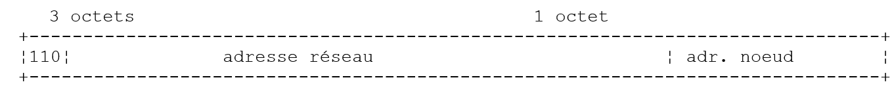
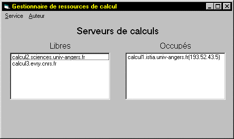
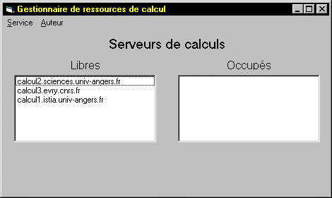

8. TCP-IP-Programmierung
8.1. Allgemeine Informationen
8.1.1. Internetprotokolle
Hier bieten wir eine Einführung in die Internet-Kommunikationsprotokolle, auch bekannt als TCP/IP-Suite (Transmission Control Protocol / Internet Protocol), benannt nach den beiden Hauptprotokollen. Es ist ratsam, dass der Leser über ein allgemeines Verständnis der Funktionsweise von Netzwerken und insbesondere der TCP/IP-Protokolle verfügt, bevor er sich mit der Entwicklung verteilter Anwendungen befasst.
Der folgende Text ist eine Teilübersetzung eines Auszugs aus NOVELLs „LAN Workplace for DOS – Administrator’s Guide“, einem Dokument aus den frühen 1990er Jahren.
Das allgemeine Konzept der Schaffung eines Netzwerks aus heterogenen Computern geht auf Forschungen der DARPA (Defense Advanced Research Projects Agency) in den Vereinigten Staaten zurück. Die DARPA entwickelte die als TCP/IP bekannte Protokollsuite, die es heterogenen Rechnern ermöglicht, miteinander zu kommunizieren. Diese Protokolle wurden in einem Netzwerk namens ARPAnet getestet, aus dem später das Internet hervorging. TCP/IP-Protokolle definieren Formate und Regeln für die Übertragung und den Empfang, die unabhängig von der Netzwerkarchitektur und der verwendeten Hardware sind.
Das von der DARPA entworfene und durch TCP/IP-Protokolle verwaltete Netzwerk ist ein paketvermitteltes Netzwerk. Ein solches Netzwerk überträgt Informationen in kleinen Einheiten, sogenannten Paketen, über das Netzwerk. Wenn also ein Computer eine große Datei überträgt, wird diese in kleine Teile zerlegt, die über das Netzwerk gesendet und am Zielort wieder zusammengesetzt werden. TCP/IP definiert das Format dieser Pakete, nämlich:
- Absender des Pakets
- Ziel
- Länge
- Typ
8.1.2. Das OSI-Modell
Die TCP/IP-Protokolle folgen im Großen und Ganzen dem offenen Netzwerkmodell, das als OSI (Open Systems Interconnection Reference Model) bekannt ist und von der ISO (International Standards Organization) definiert wurde. Dieses Modell beschreibt ein ideales Netzwerk, in dem die Kommunikation zwischen Rechnern durch ein siebenstufiges Modell dargestellt werden kann:

Jede Schicht erhält Dienste von der darunterliegenden Schicht und stellt der darüberliegenden Schicht ihre eigenen Dienste zur Verfügung. Angenommen, zwei Anwendungen auf verschiedenen Rechnern A und B möchten miteinander kommunizieren: Dies geschieht auf der Anwendungsschicht. Sie müssen nicht alle Details der Netzwerkfunktion kennen: Jede Anwendung leitet die Informationen, die sie übertragen möchte, an die darunterliegende Schicht weiter: die Präsentationsschicht. Die Anwendung muss daher nur die Regeln für die Schnittstelle zur Präsentationsschicht kennen.
Sobald sich die Informationen in der Präsentationsschicht befinden, werden sie gemäß anderen Regeln an die Sitzungsschicht weitergeleitet und so weiter, bis die Informationen das physikalische Medium erreichen und physikalisch an den Zielrechner übertragen werden. Dort durchläuft sie den umgekehrten Prozess dessen, was auf dem sendenden Rechner stattgefunden hat.
Auf jeder Schicht sendet der für die Übertragung der Informationen zuständige Senderprozess diese an einen Empfängerprozess auf dem anderen Rechner, der derselben Schicht angehört wie er selbst. Dies geschieht nach bestimmten Regeln, die als Schichtprotokoll bezeichnet werden. Wir erhalten somit das folgende endgültige Kommunikationsdiagramm:

Die Aufgaben der verschiedenen Schichten sind wie folgt:
Gewährleistet die Übertragung von Bits über ein physikalisches Medium. Diese Schicht umfasst Datenverarbeitungs-Endgeräte (DPTE) wie Terminals oder Computer sowie Datenkreis-Anschlussgeräte (DCTE) wie Modulatoren/Demodulatoren, Multiplexer und Konzentratoren. Wichtige Punkte auf dieser Ebene sind: . die Wahl der Informationskodierung (analog oder digital) . die Wahl des Übertragungsmodus (synchron oder asynchron). | |
Verbirgt die physikalischen Eigenschaften der physikalischen Schicht. Erkennt und korrigiert Übertragungsfehler. | |
Verwaltet den Weg, den über das Netzwerk gesendete Informationen zurücklegen müssen. Dies wird als Routing bezeichnet: die Bestimmung der Route, die Informationen nehmen müssen, um ihr Ziel zu erreichen. | |
Ermöglicht die Kommunikation zwischen zwei Anwendungen, während die vorherigen Schichten nur die Kommunikation zwischen Rechnern zuließen. Ein von dieser Schicht bereitgestellter Dienst kann Multiplexing sein: Die Transportschicht kann eine einzige Netzwerkverbindung (von Rechner zu Rechner) nutzen, um Daten mehrerer Anwendungen zu übertragen. | |
Diese Schicht bietet Dienste, die es einer Anwendung ermöglichen, eine Arbeitssitzung auf einem Remote-Rechner zu eröffnen und aufrechtzuerhalten. | |
Sie zielt darauf ab, die Darstellung von Daten über verschiedene Maschinen hinweg zu standardisieren. Daher werden Daten, die von Maschine A stammen, von der Präsentationsschicht von Maschine A gemäß einem Standardformat „formatiert“, bevor sie über das Netzwerk gesendet werden. Bei Erreichen der Präsentationsschicht der Zielmaschine B, die sie dank ihres Standardformats erkennt, werden sie anders formatiert, damit die Anwendung auf Maschine B sie erkennen kann. | |
Auf dieser Ebene finden wir Anwendungen, die im Allgemeinen nah am Benutzer sind, wie E-Mail oder Dateiübertragung. |
8.1.3. Das TCP/IP-Modell
Das OSI-Modell ist ein Idealmodell, das nie vollständig umgesetzt wurde. Die TCP/IP-Protokollsuite nähert sich diesem Modell auf folgende Weise an:

Physikalische Schicht
In lokalen Netzwerken wird in der Regel Ethernet- oder Token-Ring-Technologie verwendet. Wir konzentrieren uns hier ausschließlich auf die Ethernet-Technologie.
Ethernet
Dies ist die Bezeichnung für eine paketvermittelte LAN-Technologie, die Anfang der 1970er Jahre bei Xerox PARC entwickelt und 1978 von Xerox, Intel und Digital Equipment standardisiert wurde. Das Netzwerk besteht physisch aus einem Koaxialkabel mit einem Durchmesser von etwa 1,27 cm und einer Länge von bis zu 500 m. Es kann mithilfe von Repeatern erweitert werden, wobei zwischen zwei beliebigen Geräten nicht mehr als zwei Repeater liegen dürfen. Das Kabel ist passiv: Alle aktiven Komponenten befinden sich in den an das Kabel angeschlossenen Geräten. Jedes Gerät ist über eine Netzwerkkarte mit dem Kabel verbunden, die Folgendes umfasst:
- einen Transceiver, der das Vorhandensein von Signalen auf dem Kabel erkennt und analoge Signale in digitale Signale umwandelt und umgekehrt.
- einen Koppler, der digitale Signale vom Transceiver empfängt und zur Verarbeitung an den Computer weiterleitet oder umgekehrt.
Die Hauptmerkmale der Ethernet-Technologie sind wie folgt:
- Kapazität von 10 Megabit pro Sekunde.
- Bus-Topologie: Alle Geräte sind an dasselbe Kabel angeschlossen

- Broadcast-Netzwerk – Ein sendender Rechner überträgt Informationen über das Kabel zusammen mit der Adresse des empfangenden Rechners. Alle angeschlossenen Rechner empfangen diese Informationen, doch nur der beabsichtigte Empfänger behält sie.
- Die Zugriffsmethode funktioniert wie folgt: Der Sender, der senden möchte, hört auf das Kabel – er erkennt dann, ob eine Trägerwelle vorhanden ist oder nicht, deren Vorhandensein darauf hindeuten würde, dass gerade eine Übertragung stattfindet. Dies ist die CSMA-Technik (Carrier Sense Multiple Access). Ist keine Trägerwelle vorhanden, kann ein Sender beschließen, nacheinander zu senden. Mehrere Sender können diese Entscheidung treffen. Die gesendeten Signale vermischen sich: Dies wird als Kollision bezeichnet. Der Sender erkennt diese Situation: Während er über das Kabel sendet, hört er gleichzeitig ab, was tatsächlich darüber läuft. Stellt er fest, dass die über das Kabel übertragenen Informationen nicht die sind, die er gesendet hat, schließt er auf eine Kollision und beendet die Übertragung. Die anderen Sender, die ebenfalls gesendet haben, verfahren ebenso. Jeder nimmt die Übertragung nach einer zufälligen Verzögerung wieder auf, die vom jeweiligen Sender abhängt. Diese Technik wird als CD (Collision Detect) bezeichnet. Das Zugriffsverfahren wird daher als CSMA/CD bezeichnet.
- 48-Bit-Adressierung. Jeder Rechner verfügt über eine Adresse, die hier als physikalische Adresse bezeichnet wird und auf der Karte vermerkt ist, die ihn mit dem Kabel verbindet. Diese Adresse wird als Ethernet-Adresse des Rechners bezeichnet.
Netzwerkschicht
Auf dieser Schicht finden wir die Protokolle IP, ICMP, ARP und RARP.
IP (Internet Protocol) | Überträgt Pakete zwischen zwei Netzwerkknoten |
ICMP (Internet Control Message Protocol) | ICMP erleichtert die Kommunikation zwischen dem IP-Protokollprogramm auf einem Rechner und dem auf einem anderen Rechner. Es handelt sich somit um ein Protokoll zum Austausch von Nachrichten innerhalb des IP-Protokolls selbst. |
ARP (Address Resolution Protocol) | ordnet die Internetadresse eines Geräts seiner physikalischen Adresse zu |
RARP (Reverse Address Resolution Protocol) | ordnet die physikalische Adresse eines Rechners seiner Internetadresse zu |
Transport-/Sitzungsschicht
Diese Schicht umfasst die folgenden Protokolle:
TCP (Transmission Control Protocol) | Gewährleistet die zuverlässige Übertragung von Informationen zwischen zwei Clients |
UDP (User Datagram Protocol) | Gewährleistet die unzuverlässige Übertragung von Informationen zwischen zwei Clients |
Anwendungs-/Präsentations-/Sitzungsschicht
Hier finden sich verschiedene Protokolle:
Ein Terminalemulator, der es Rechner A ermöglicht, sich als Terminal mit Rechner B zu verbinden | |
Ermöglicht die Übertragung von Dateien | |
ermöglicht Dateiübertragungen | |
ermöglicht den Austausch von Nachrichten zwischen Netzwerkbenutzern | |
wandelt einen Rechnernamen in die Internetadresse des Rechners um | |
Wurde von Sun Microsystems entwickelt und legt einen Standard für eine maschinenunabhängige Datendarstellung fest | |
Ebenfalls von Sun definiert, handelt es sich um ein Kommunikationsprotokoll zwischen entfernten Anwendungen, das unabhängig von der Transportschicht ist. Dieses Protokoll ist wichtig: Es erspart dem Programmierer die Notwendigkeit, die Details der Transportschicht zu kennen, und macht Anwendungen portabel. Dieses Protokoll basiert auf dem XDR-Protokoll | |
Ebenfalls von Sun definiert, ermöglicht dieses Protokoll einem Rechner, das Dateisystem eines anderen Rechners zu „sehen“. Es basiert auf dem oben erwähnten RPC-Protokoll |
8.1.4. So funktionieren Internetprotokolle
Anwendungen, die in der TCP/IP-Umgebung entwickelt wurden, nutzen in der Regel mehrere der in dieser Umgebung vorhandenen Protokolle. Ein Anwendungsprogramm kommuniziert mit der obersten Schicht der Protokolle. Diese Schicht leitet die Informationen an die darunterliegende Schicht weiter, und so weiter, bis sie das physikalische Medium erreicht. Dort werden die Informationen physikalisch an den Zielrechner übertragen, wo sie erneut dieselben Schichten durchlaufen, diesmal in umgekehrter Richtung, bis sie die Anwendung erreichen, die die gesendeten Informationen empfangen soll. Das folgende Diagramm zeigt den Weg der Informationen:

Nehmen wir ein Beispiel: die FTP-Anwendung, die auf der Anwendungsschicht definiert ist und die Dateiübertragung zwischen Rechnern ermöglicht.
- Die Anwendung liefert eine zu übertragende Bytefolge an die Transportschicht.
- Die Transportschicht unterteilt diese Bytefolge in TCP-Segmente und fügt die Segmentnummer an den Anfang jedes Segments. Die Segmente werden an die Netzwerkschicht weitergeleitet, die vom IP-Protokoll gesteuert wird.
- Die IP-Schicht erstellt ein Paket, das das empfangene TCP-Segment kapselt. Im Header dieses Pakets platziert sie die Internetadressen des Quell- und des Zielrechners. Außerdem ermittelt sie die physikalische Adresse des Zielrechners. Das gesamte Paket wird an die Datenverbindungs- und physikalische Schicht weitergeleitet, d. h. an die Netzwerkkarte, die den Rechner mit dem physikalischen Netzwerk verbindet.
- Dort wird das IP-Paket wiederum in einen physikalischen Rahmen gekapselt und über das Kabel an den Empfänger gesendet.
- Auf dem Zielrechner macht die Datenverbindungs- und physikalische Schicht das Gegenteil: Sie entkapseln das IP-Paket aus dem physikalischen Rahmen und leiten es an die IP-Schicht weiter.
- Die IP-Schicht überprüft, ob das Paket korrekt ist: Sie berechnet anhand der empfangenen Bits eine Prüfsumme, die sie im Paket-Header wiederfinden muss. Ist dies nicht der Fall, wird das Paket verworfen.
- Wird das Paket als gültig eingestuft, entkapselt die IP-Schicht das darin enthaltene TCP-Segment und leitet es an die Transportschicht weiter.
- Die Transportschicht – in unserem Beispiel die TCP-Schicht – überprüft die Segmentnummer, um sicherzustellen, dass die Segmente in der richtigen Reihenfolge vorliegen.
- Außerdem berechnet sie eine Prüfsumme für das TCP-Segment. Wenn diese korrekt ist, sendet die TCP-Schicht eine Bestätigung an den Absender; andernfalls wird das TCP-Segment abgelehnt.
- Nun muss die TCP-Schicht nur noch den Datenteil des Segments an die Anwendung in der darüberliegenden Schicht übertragen, die diesen empfangen soll.
8.1.5. Adressierungsprobleme im Internet
Ein Netzwerkknoten kann ein Computer, ein intelligenter Drucker, ein Dateiserver sein – eigentlich alles, was über TCP/IP-Protokolle kommunizieren kann. Jeder Knoten hat eine physikalische Adresse, deren Format vom Netzwerktyp abhängt. In einem Ethernet-Netzwerk wird die physikalische Adresse über 6 Bytes kodiert. Eine X.25-Netzwerkadresse ist eine 14-stellige Zahl.
Die Internetadresse eines Knotens ist eine logische Adresse: Sie ist unabhängig von der Hardware und dem verwendeten Netzwerk. Es handelt sich um eine 4-Byte-Adresse, die sowohl ein lokales Netzwerk als auch einen Knoten in diesem Netzwerk identifiziert. Die Internetadresse wird üblicherweise als vier Zahlen – die Werte der vier Bytes – dargestellt, die durch einen Punkt getrennt sind. So lautet die Adresse des Rechners Lagaffe an der Fakultät für Naturwissenschaften in Angers 193.49.144.1 und die des Rechners Liny 193.49.144.9. Daraus lässt sich ableiten, dass die Internetadresse des lokalen Netzwerks 193.49.144.0 lautet. In diesem Netzwerk können bis zu 254 Knoten vorhanden sein.
Da Internetadressen, oder IP-Adressen, netzwerkunabhängig sind, kann ein Rechner im Netzwerk A mit einem Rechner im Netzwerk B kommunizieren, ohne sich um die Art des Netzwerks zu kümmern, in dem er sich befindet: Er muss lediglich dessen IP-Adresse kennen. Das IP-Protokoll jedes Netzwerks übernimmt die Umwandlung zwischen IP-Adresse und physikalischer Adresse in beide Richtungen.
Alle IP-Adressen müssen eindeutig sein. Offizielle Organisationen sind für deren Vergabe zuständig. Tatsächlich weisen diese Organisationen lokalen Netzwerken eine Adresse zu, zum Beispiel 193.49.144.0 für das Netzwerk der Fakultät für Naturwissenschaften in Angers. Der Administrator dieses Netzwerks kann dann die IP-Adressen 193.49.144.1 bis 193.49.144.254 nach eigenem Ermessen vergeben. Diese Adresse wird in der Regel in einer speziellen Datei auf jedem mit dem Netzwerk verbundenen Rechner gespeichert.
8.1.5.1. IP-Adressklassen
Eine IP-Adresse ist eine Folge von 4 Bytes, oft geschrieben als I1.I2.I3.I4, die eigentlich zwei Adressen enthält:
- die Netzwerkadresse
- die Adresse eines Knotens in diesem Netzwerk
Je nach Größe dieser beiden Felder werden IP-Adressen in drei Klassen unterteilt: Klasse A, B und C.
Klasse A
Die IP-Adresse: I1.I2.I3.I4 hat die Form R1.N1.N2.N3, wobei
R1 die Netzwerkadresse
N1.N2.N3 die Adresse eines Rechners in diesem Netzwerk ist
Genauer gesagt hat eine IP-Adresse der Klasse A das folgende Format:

Die Netzwerkadresse ist 7 Bit lang und die Hostadresse 24 Bit lang. Es kann daher 127 Netzwerke der Klasse A geben, von denen jedes bis zu 2²⁴ Hosts enthält.
Klasse B
Hier hat die IP-Adresse: I1.I2.I3.I4 die Form R1.R2.N1.N2, wobei
R1.R2 die Netzwerkadresse
N1.N2 die Adresse eines Rechners in diesem Netzwerk ist
Genauer gesagt hat eine IP-Adresse der Klasse B das folgende Format:

Die Netzwerkadresse ist 2 Byte (genauer gesagt 14 Bit) lang, ebenso wie die Knotenadresse. Das bedeutet, dass es 2¹⁴ Netzwerke der Klasse B geben kann, von denen jedes bis zu 2¹⁶ Knoten enthält.
Klasse C
In dieser Klasse hat die IP-Adresse I1.I2.I3.I4 die Form R1.R2.R3.N1, wobei
R1.R2.R3 die Netzwerkadresse
N1 die Adresse eines Rechners in diesem Netzwerk ist
Genauer gesagt hat eine IP-Adresse der Klasse C das folgende Format:

Die Netzwerkadresse umfasst 3 Bytes (abzüglich 3 Bits) und die Hostadresse 1 Byte. Es kann daher 2²¹ Netzwerke der Klasse C geben, von denen jedes bis zu 256 Hosts umfasst.
Da die Adresse des Lagaffe-Rechners an der naturwissenschaftlichen Fakultät in Angers 193.49.144.1 lautet, sehen wir, dass das höchstwertige Byte 193 ist, was binär 11000001 entspricht. Daraus lässt sich ableiten, dass es sich um ein Netzwerk der Klasse C handelt.
Reservierte Adressen
. Einige IP-Adressen sind Netzwerkadressen und keine Knotenadressen innerhalb des Netzwerks. Dies sind diejenigen, bei denen die Knotenadresse auf 0 gesetzt ist. Somit ist die Adresse 193.49.144.0 die IP-Adresse des Netzwerks der naturwissenschaftlichen Fakultät in Angers. Folglich kann kein Knoten in einem Netzwerk die Adresse Null haben.
. Wenn die Knotenadresse in einer IP-Adresse ausschließlich aus Einsen besteht, handelt es sich um eine Broadcast-Adresse: Diese Adresse bezieht sich auf alle Knoten im Netzwerk.
. In einem Netzwerk der Klasse C, das theoretisch 2⁸ = 256 Knoten zulässt, bleiben nach Abzug der beiden verbotenen Adressen nur 254 zulässige Adressen übrig.
8.1.5.2. Protokolle zur Umwandlung von Internetadressen in physikalische Adressen
Wir haben gesehen, dass Daten, wenn sie von einem Rechner zu einem anderen übertragen werden, beim Durchlaufen der IP-Schicht in Pakete gekapselt werden. Diese Pakete haben die folgende Form:

Das IP-Paket enthält somit die Internetadressen des Quell- und des Zielrechners. Wenn dieses Paket an die Schicht weitergeleitet wird, die für die Übertragung über das physikalische Netzwerk zuständig ist, werden zusätzliche Informationen hinzugefügt, um den physikalischen Frame zu bilden, der schließlich über das Netzwerk gesendet wird. Das Format eines Frames in einem Ethernet-Netzwerk sieht beispielsweise wie folgt aus:

Im endgültigen Frame befinden sich die physikalischen Adressen des Quell- und des Zielrechners. Wie werden diese ermittelt?
Der sendende Rechner, der die IP-Adresse des Rechners kennt, mit dem er kommunizieren möchte, ermittelt dessen physikalische Adresse mithilfe eines speziellen Protokolls namens ARP (Address Resolution Protocol).
- Er sendet ein spezielles Paket, ein sogenanntes ARP-Paket, das die IP-Adresse des Rechners enthält, dessen physikalische Adresse gesucht wird. Außerdem enthält das Paket seine eigene IP-Adresse und physikalische Adresse.
- Dieses Paket wird an alle Knoten im Netzwerk gesendet.
- Diese Knoten erkennen den besonderen Charakter des Pakets. Der Knoten, der seine IP-Adresse im Paket erkennt, antwortet, indem er seine physikalische Adresse an den Absender des Pakets sendet. Wie kann er das tun? Er hat die IP- und die physikalische Adresse des Absenders im Paket gefunden.
- Der Absender erhält somit die physikalische Adresse, nach der er gesucht hat. Er speichert sie im Speicher, damit er sie später verwenden kann, falls weitere Pakete an denselben Empfänger gesendet werden müssen.
Die IP-Adresse eines Rechners ist normalerweise in einer seiner Konfigurationsdateien gespeichert, die er zur Abfrage dieser Adresse heranziehen kann. Diese Adresse kann geändert werden: Bearbeite einfach die Datei. Die physikalische Adresse ist jedoch im Speicher der Netzwerkkarte gespeichert und kann nicht geändert werden.
Wenn ein Administrator das Netzwerk neu organisieren möchte, muss er möglicherweise die IP-Adressen aller Knoten ändern und somit die verschiedenen Konfigurationsdateien für jeden Knoten bearbeiten. Dies kann mühsam und fehleranfällig sein, wenn es viele Rechner gibt. Eine Methode besteht darin, den Rechnern keine IP-Adresse zuzuweisen: Stattdessen wird ein spezieller Code in die Datei eingegeben, in der der Rechner normalerweise seine IP-Adresse finden würde. Sobald der Rechner feststellt, dass er keine IP-Adresse hat, fordert er eine über ein Protokoll namens RARP (Reverse Address Resolution Protocol) an. Er sendet dann ein spezielles Paket, ein sogenanntes RARP-Paket, über das Netzwerk – ähnlich wie das vorherige ARP-Paket –, das seine physikalische Adresse enthält. Dieses Paket wird an alle Knoten gesendet, die ein RARP-Paket erkennen. Einer davon, der sogenannte RARP-Server, verwaltet eine Datei, die die Zuordnungen von physikalischen Adressen zu IP-Adressen für alle Knoten enthält. Er antwortet dann dem Absender des RARP-Pakets, indem er dessen IP-Adresse zurücksendet. Ein Administrator, der sein Netzwerk neu konfigurieren möchte, muss daher lediglich die Zuordnungsdatei auf dem RARP-Server bearbeiten ( ). Dieser Server muss normalerweise über eine feste IP-Adresse verfügen, die er kennen muss, ohne selbst das RARP-Protokoll nutzen zu müssen.
8.1.6. Die Netzwerkschicht, bekannt als die IP-Schicht des Internets
Das IP (Internet Protocol) definiert das Format, das Pakete haben müssen, und wie sie während der Übertragung oder des Empfangs behandelt werden müssen. Diese spezielle Art von Paket wird als IP-Datagramm bezeichnet. Wir haben dies bereits besprochen:

Der wichtige Punkt ist, dass das IP-Datagramm zusätzlich zu den zu übertragenden Daten die Internetadressen des Quell- und des Zielrechners enthält. Auf diese Weise weiß der empfangende Rechner, wer ihm eine Nachricht sendet.
Im Gegensatz zu einem Netzwerkrahmen, dessen Länge durch die physikalischen Eigenschaften des Netzwerks bestimmt wird, über das er übertragen wird, wird die Länge des IP-Datagramms durch die Software festgelegt und ist daher in verschiedenen physikalischen Netzwerken gleich. Wir haben gesehen, dass das IP-Datagramm auf dem Weg von der Netzwerkschicht zur physikalischen Schicht in einen physikalischen Rahmen gekapselt wird. Wir haben das Beispiel des physikalischen Rahmens eines Ethernet-Netzwerks angeführt:

Physikalische Frames wandern von Knoten zu Knoten in Richtung ihres Ziels, das sich möglicherweise nicht im selben physikalischen Netzwerk wie der sendende Rechner befindet. Das IP-Paket kann daher an den Knoten, die zwei Netzwerke unterschiedlicher Art verbinden, nacheinander in verschiedene physikalische Frames gekapselt werden. Es ist auch möglich, dass das IP-Paket zu groß ist, um in einen einzigen physikalischen Frame gekapselt zu werden. Die IP-Software auf dem Knoten, an dem dieses Problem auftritt, zerlegt das IP-Paket dann nach bestimmten Regeln in Fragmente, von denen jedes über das physikalische Netzwerk gesendet wird. Sie werden erst an ihrem endgültigen Zielort wieder zusammengesetzt.
8.1.6.1. Routing
Routing ist das Verfahren, mit dem IP-Pakete an ihren Bestimmungsort weitergeleitet werden. Es gibt zwei Methoden: direktes Routing und indirektes Routing.
Direktes Routing
Direktes Routing bezeichnet die Übertragung eines IP-Pakets direkt vom Absender zum Empfänger innerhalb desselben Netzwerks:
- Der Rechner, der ein IP-Datagramm sendet, verfügt über die IP-Adresse des Empfängers.
- Sie ermittelt die physikalische Adresse des Empfängers über das ARP-Protokoll oder aus ihren Tabellen, falls diese Adresse bereits vorliegt.
- Sie sendet das Paket über das Netzwerk an diese physikalische Adresse.
Indirektes Routing
Indirektes Routing bezeichnet die Übertragung eines IP-Pakets an ein Ziel, das sich in einem anderen Netzwerk befindet als dem, zu dem der Absender gehört. In diesem Fall unterscheiden sich die Netzwerkadressanteile der IP-Adressen des Quell- und des Zielrechners. Der Quellrechner erkennt dies. Er sendet das Paket dann an einen speziellen Knoten, einen sogenannten Router, der ein lokales Netzwerk mit anderen Netzwerken verbindet und dessen IP-Adresse er in seinen Tabellen findet – eine Adresse, die er ursprünglich entweder aus einer Datei, aus dem permanenten Speicher oder über im Netzwerk zirkulierende Informationen erhalten hat.
Ein Router ist mit zwei Netzwerken verbunden und verfügt über eine IP-Adresse in beiden dieser Netzwerke.

In unserem obigen Beispiel:
- Netzwerk Nr. 1 hat die Internetadresse 193.49.144.0 und Netzwerk Nr. 2 hat die Adresse 193.49.145.0.
- Innerhalb von Netzwerk Nr. 1 hat der Router die Adresse 193.49.144.6 und innerhalb von Netzwerk Nr. 2 die Adresse 193.49.145.3.
Die Aufgabe des Routers besteht darin, das empfangene IP-Paket – das in einem für Netzwerk Nr. 1 typischen physikalischen Frame enthalten ist – in einen physikalischen Frame zu packen, der über Netzwerk Nr. 2 übertragen werden kann. Befindet sich die IP-Adresse des Ziels des Pakets innerhalb von Netzwerk Nr. 2, sendet der Router das Paket direkt dorthin; andernfalls sendet er es an einen anderen Router, der Netzwerk Nr. 2 mit Netzwerk Nr. 3 verbindet, und so weiter.
8.1.6.2. Fehler- und Steuerungsmeldungen
Ebenfalls innerhalb der Netzwerkschicht – auf derselben Ebene wie das IP-Protokoll – befindet sich das ICMP (Internet Control Message Protocol). Es wird verwendet, um Meldungen über den internen Betrieb des Netzwerks zu senden: ausgefallene Knoten, Überlastung an einem Router usw. ICMP-Meldungen werden in IP-Pakete gekapselt und über das Netzwerk gesendet. Die IP-Schichten der verschiedenen Knoten ergreifen auf der Grundlage der empfangenen ICMP-Meldungen die entsprechenden Maßnahmen. Somit bekommt eine Anwendung selbst diese netzwerkspezifischen Probleme nie mit.
Ein Knoten nutzt die ICMP-Informationen, um seine Routing-Tabellen zu aktualisieren.
8.1.7. Die Transportschicht: die Protokolle UDP und TCP
8.1.7.1. Das UDP-Protokoll: User Datagram Protocol
Das UDP-Protokoll ermöglicht einen unzuverlässigen Datenaustausch zwischen zwei Punkten, was bedeutet, dass die erfolgreiche Zustellung eines Pakets an seinen Bestimmungsort nicht garantiert ist. Die Anwendung kann dies, wenn sie möchte, selbst handhaben, beispielsweise indem sie nach dem Senden einer Nachricht auf eine Bestätigung wartet, bevor sie die nächste sendet.
Bisher haben wir auf Netzwerkebene die IP-Adressen von Rechnern behandelt. Auf einem einzelnen Rechner können jedoch verschiedene Prozesse gleichzeitig existieren, die alle miteinander kommunizieren können. Daher muss beim Senden einer Nachricht nicht nur die IP-Adresse des Zielrechners, sondern auch der „Name“ des Zielprozesses angegeben werden. Dieser Name ist eigentlich eine Zahl, die als Portnummer bezeichnet wird. Bestimmte Nummern sind für Standardanwendungen reserviert: Port 69 beispielsweise für die TFTP-Anwendung (Trivial File Transfer Protocol).
Pakete, die vom UDP-Protokoll verarbeitet werden, werden auch als Datagramme bezeichnet. Sie haben folgende Form:

Diese Datagramme werden in IP-Pakete und anschließend in physikalische Frames gekapselt.
8.1.7.2. Das TCP-Protokoll: Transmission Control Protocol
Für eine sichere Kommunikation reicht das UDP-Protokoll nicht aus: Der Anwendungsentwickler muss selbst ein Protokoll erstellen, um sicherzustellen, dass die Pakete korrekt weitergeleitet werden.
Das TCP (Transmission Control Protocol) vermeidet diese Probleme. Seine Eigenschaften sind wie folgt:
- Der Prozess, der Daten übertragen möchte, baut zunächst eine Verbindung zu dem Prozess auf, der die zu übertragenden Informationen empfangen soll. Diese Verbindung wird zwischen einem Port auf dem sendenden Rechner und einem Port auf dem empfangenden Rechner hergestellt. So entsteht ein virtueller Pfad zwischen den beiden Ports, der ausschließlich für die beiden Prozesse reserviert ist, die die Verbindung hergestellt haben.
- Alle vom Quellprozess gesendeten Pakete folgen diesem virtuellen Pfad und kommen in der Reihenfolge an, in der sie gesendet wurden, was beim UDP-Protokoll nicht gewährleistet war, da Pakete unterschiedliche Pfade nehmen konnten.
- Die übertragenen Daten erscheinen als kontinuierlicher Strom. Der sendende Prozess sendet Daten in seinem eigenen Tempo. Diese Daten werden nicht unbedingt sofort gesendet: Das TCP-Protokoll wartet, bis es genug Daten zum Senden hat. Sie werden in einer Struktur gespeichert, die als TCP-Segment bezeichnet wird. Sobald dieses Segment voll ist, wird es an die IP-Schicht übertragen, wo es in ein IP-Paket gekapselt wird.
- Jedes vom TCP-Protokoll gesendete Segment ist nummeriert. Das empfangende TCP-Protokoll überprüft, ob es die Segmente in der richtigen Reihenfolge empfängt. Für jedes korrekt empfangene Segment sendet es eine Bestätigung an den Absender.
- Wenn der Empfänger diese erhält, benachrichtigt er den Absender. Der Absender kann somit bestätigen, dass ein Segment erfolgreich zugestellt wurde, was mit dem UDP-Protokoll nicht möglich war.
- Wenn das TCP-Protokoll, das ein Segment gesendet hat, nach einer bestimmten Zeit keine Bestätigung erhält, sendet es das betreffende Segment erneut und gewährleistet so die Qualität der Datenübertragung.
- Die zwischen den beiden kommunizierenden Prozessen hergestellte virtuelle Verbindung ist vollduplexfähig: Das bedeutet, dass Informationen in beide Richtungen fließen können. So kann der Zielprozess Bestätigungen senden, während der Quellprozess weiterhin Informationen sendet. Dies ermöglicht es beispielsweise dem Quell-TCP-Protokoll, mehrere Segmente zu senden, ohne auf eine Bestätigung zu warten. Stellt es nach einer bestimmten Zeit fest, dass es für ein bestimmtes Segment Nr. n keine Bestätigung erhalten hat, setzt es das Senden von Segmenten ab diesem Punkt fort.
8.1.8. Die Anwendungsschicht
Über den UDP- und TCP-Protokollen gibt es verschiedene Standardprotokolle:
TELNET
Dieses Protokoll ermöglicht es einem Benutzer auf Rechner A im Netzwerk, eine Verbindung zu Rechner B (oft als Host-Rechner bezeichnet) herzustellen. TELNET emuliert auf Rechner A ein sogenanntes universelles Terminal. Der Benutzer verhält sich daher so, als hätte er ein Terminal an Rechner B angeschlossen. Telnet basiert auf dem TCP-Protokoll.
FTP: (File Transfer Protocol)
Dieses Protokoll ermöglicht den Austausch von Dateien zwischen zwei entfernten Rechnern sowie Dateioperationen wie beispielsweise das Anlegen von Verzeichnissen. Es basiert auf dem TCP-Protokoll.
TFTP: (Trivial File Transfer Protocol)
Dieses Protokoll ist eine Variante von FTP. Es basiert auf dem UDP-Protokoll und ist weniger komplex als FTP.
DNS: (Domain Name System)
Wenn ein Benutzer Dateien mit einem Remote-Rechner austauschen möchte, beispielsweise über FTP, muss er die Internetadresse dieses Rechners kennen. Um beispielsweise FTP auf dem Lagaffe-Rechner an der Universität Angers zu nutzen, müssten Sie FTP wie folgt ausführen: FTP 193.49.144.1
Dazu ist ein Verzeichnis erforderlich, das Rechner IP-Adressen zuordnet. In diesem Verzeichnis würden die Rechner wahrscheinlich durch symbolische Namen wie die folgenden bezeichnet:
DPX2/320-Rechner an der Universität Angers
Sun-Rechner am ISERPA in Angers
Es liegt auf der Hand, dass es praktischer wäre, einen Rechner anhand seines Namens statt seiner IP-Adresse zu bezeichnen. Dies wirft die Frage nach der Eindeutigkeit der Namen auf: Es gibt Millionen miteinander verbundener Rechner. Man könnte sich eine zentrale Stelle vorstellen, die die Namen vergibt. Das wäre zweifellos recht umständlich. Die Kontrolle über die Namen wurde daher auf verschiedene **Domänen** verteilt. Jede Domäne wird von einer in der Regel sehr schlanken Organisation verwaltet, die völlige Freiheit bei der Wahl der Maschinennamen hat. So gehören Maschinen in Frankreich zur fr-Domäne, die vom Inria in Paris verwaltet wird. Um die Sache weiter zu vereinfachen, ist die Kontrolle noch weiter verteilt: Innerhalb der fr-Domäne werden Domänen angelegt. So gehört die Universität Angers zur univ-Angers-Domäne. Die Abteilung, die diese Domäne verwaltet, hat völlige Freiheit bei der Benennung der Maschinen im Netzwerk der Universität Angers. Bislang wurde diese Domäne noch nicht unterteilt. In einer großen Universität mit vielen vernetzten Rechnern könnte dies jedoch der Fall sein.
Der Rechner DPX2/320 an der Universität Angers wurde *„Lagaffe“* genannt, während ein 486DX50-PC den Namen *„liny“* erhielt. Wie verweist man von außen auf diese Rechner? Indem man die Hierarchie der Domänen angibt, zu denen sie gehören. Der vollständige Name des Rechners „Lagaffe“ lautet somit:
Innerhalb von Domänen können relative Namen verwendet werden. Innerhalb der fr-Domäne und außerhalb der univ-Angers-Domäne kann der Rechner „Lagaffe“ also wie folgt referenziert werden:
Schließlich kann innerhalb der *univ-Angers*-Domäne einfach auf sie verwiesen werden als
Eine Anwendung kann somit über den Namen auf einen Rechner verweisen. Letztendlich muss man jedoch immer noch die IP-Adresse des Rechners ermitteln. Wie geht das? Angenommen, wir möchten von Rechner A aus mit Rechner B kommunizieren.
- Wenn Rechner B zur selben Domäne gehört wie Rechner A, ist seine IP-Adresse wahrscheinlich in einer Datei auf Rechner A zu finden.
- Andernfalls findet Rechner A in einer anderen Datei oder derselben wie zuvor eine Liste mehrerer Nameserver mit deren IP-Adressen. Ein Nameserver ist dafür zuständig, einen Rechnernamen seiner IP-Adresse zuzuordnen. Rechner A sendet eine spezielle Anfrage an den ersten Nameserver auf seiner Liste, eine sogenannte DNS-Abfrage, die den Namen des gesuchten Rechners enthält. Wenn der abgefragte Server diesen Namen in seinen Einträgen hat, sendet er die entsprechende IP-Adresse an Rechner A. Andernfalls findet der Server in seinen Dateien ebenfalls eine Liste von Nameservern, die er abfragen kann. Dies wird er dann tun. Somit werden mehrere Nameserver abgefragt, jedoch nicht willkürlich, sondern so, dass die Anzahl der Anfragen minimiert wird. Wenn der Rechner schließlich gefunden wird, wird die Antwort an Rechner A zurückgesendet.
XDR: (eXternal Data Representation)
Dieses von Sun Microsystems entwickelte Protokoll definiert einen Standard für eine maschinenunabhängige Datendarstellung.
RPC: (Remote Procedure Call)
Ebenfalls von Sun definiert, handelt es sich hierbei um ein Kommunikationsprotokoll zwischen entfernten Anwendungen, das unabhängig von der Transportschicht ist. Dieses Protokoll ist wichtig: Es entlastet den Programmierer von der Notwendigkeit, die Details der Transportschicht zu kennen, und macht Anwendungen portabel. Dieses Protokoll basiert auf dem XDR-Protokoll
NFS: Network File System
Ebenfalls von Sun definiert, ermöglicht dieses Protokoll einem Rechner, das Dateisystem eines anderen Rechners zu „sehen“. Es basiert auf dem oben beschriebenen RPC-Protokoll.
8.1.9. Fazit
In dieser Einführung haben wir einige der wichtigsten Merkmale von Internetprotokollen vorgestellt. Um sich weiter in diesem Bereich zu vertiefen, können Leser das hervorragende Buch von Douglas Comer zu Rate ziehen:
Titel: TCP/IP: Architektur, Protokolle, Anwendungen.
Autor: Douglas COMER
Verlag: InterEditions
8.2. Netzwerkadressverwaltung in Java
8.2.1. Definition
Jeder Rechner im Internet wird durch eine eindeutige Adresse oder einen Namen identifiziert. Diese beiden Entitäten werden in Java von der Klasse InetAddress verwaltet, die die folgenden Methoden enthält:
gibt die 4 Bytes der IP-Adresse der aktuellen InetAddress-Instanz zurück | |
gibt die IP-Adresse der aktuellen InetAddress-Instanz zurück | |
gibt den Internetnamen der aktuellen InetAddress-Instanz zurück | |
gibt die IP-Adresse/den Internetnamen der aktuellen InetAddress-Instanz zurück | |
erstellt die InetAddress-Instanz für den durch Host angegebenen Rechner. Löst eine Ausnahme aus, wenn Host unbekannt ist. Host kann der Internetname eines Rechners oder dessen IP-Adresse in der Form I1.I2.I3.I4 sein | |
erstellt die InetAddress-Instanz des Rechners, auf dem das Programm mit dieser Anweisung ausgeführt wird. |
8.2.2. Einige Beispiele
8.2.2.1. Identifizieren des lokalen Rechners
import java.net.*;
public class localhost{
public static void main (String arg[]){
try{
InetAddress adresse=InetAddress.getLocalHost();
byte[] IP=adresse.getAddress();
System.out.print("IP=");
int i;
for(i=0;i<IP.length-1;i++) System.out.print(IP[i]+".");
System.out.println(IP[i]);
System.out.println("adresse="+adresse.getHostAddress());
System.out.println("nom="+adresse.getHostName());
System.out.println("identité="+adresse);
} catch (UnknownHostException e){
System.out.println ("Erreur getLocalHost : "+e);
}// fin try
}// fine hand
}// fin class
Die Ergebnisse der Ausführung lauten wie folgt:
Jeder Rechner hat eine interne IP-Adresse, nämlich 127.0.0.1. Wenn ein Programm diese Netzwerkadresse verwendet, bezieht es sich auf den Rechner, auf dem es läuft. Der Vorteil dieser Adresse ist, dass sie keine Netzwerkkarte erfordert. Das bedeutet, dass Sie Netzwerkprogramme testen können, ohne mit einem Netzwerk verbunden zu sein. Eine weitere Möglichkeit, auf den lokalen Rechner zu verweisen, ist die Verwendung des Namens localhost.
8.2.2.2. Identifizieren eines beliebigen Rechners
import java.net.*;
public class getbyname{
public static void main (String arg[]){
String nomMachine;
// we retrieve the argument
if(arg.length==0)
nomMachine="localhost";
else nomMachine=arg[0];
// we try to obtain the machine address
try{
InetAddress adresse=InetAddress.getByName(nomMachine);
System.out.println("IP : "+ adresse.getHostAddress());
System.out.println("nom : "+ adresse.getHostName());
System.out.println("identité : "+ adresse);
} catch (UnknownHostException e){
System.out.println ("Erreur getByName : "+e);
}// fin try
}// fine hand
}// fin class
Mit dem Java-Aufruf getByName erhalten wir folgende Ergebnisse:
Mit dem Java-Aufruf getbyname shiva.istia.univ-angers.fr erhalten wir:
Mit dem Java-Aufruf **getbyname www.ibm.com** erhalten wir:
8.3. TCP/IP-Programmierung
8.3.1. Allgemeine Informationen

Wenn eine AppA-Anwendung auf Rechner A mit einer AppB-Anwendung auf Rechner B im Internet kommunizieren möchte, muss sie mehrere Dinge wissen:
- die IP-Adresse oder den Hostnamen von Rechner B
- die von der Anwendung AppB verwendete Portnummer. Der Grund dafür ist, dass Rechner B möglicherweise viele Anwendungen hostet, die im Internet laufen. Wenn er Informationen aus dem Netzwerk empfängt, muss er wissen, für welche Anwendung die Informationen bestimmt sind. Die Anwendungen auf Rechner B greifen über Schnittstellen, auch als Kommunikationsports bezeichnet, auf das Netzwerk zu. Diese Informationen sind in dem von Rechner B empfangenen Paket enthalten, damit es an die richtige Anwendung weitergeleitet werden kann.
- Die von Rechner B verstandenen Kommunikationsprotokolle. In unserer Studie werden wir ausschließlich TCP-IP-Protokolle verwenden.
- Das von der Anwendung AppB akzeptierte Kommunikationsprotokoll. Tatsächlich werden die Maschinen A und B miteinander „kommunizieren“. Was sie sagen, wird in die TCP/IP-Protokolle eingekapselt. Wenn jedoch am Ende der Kette die Anwendung AppB die von der Anwendung AppA gesendeten Informationen empfängt, muss sie in der Lage sein, diese zu interpretieren. Dies ist vergleichbar mit der Situation, in der zwei Personen, A und B, per Telefon kommunizieren: Ihr Gespräch wird über das Telefon übertragen. Die Sprache wird von Telefon A als Signale codiert, über Telefonleitungen übertragen und von Telefon B empfangen, wo sie decodiert wird. Person B hört dann die Sprache. Hier kommt das Konzept eines Kommunikationsprotokolls ins Spiel: Wenn A Französisch spricht und B diese Sprache nicht versteht, können A und B nicht effektiv kommunizieren.
Daher müssen sich die beiden kommunizierenden Anwendungen auf die Art des Dialogs einigen, den sie verwenden werden. Beispielsweise ist der Dialog mit einem FTP-Dienst nicht derselbe wie mit einem POP-Dienst: Diese beiden Dienste akzeptieren nicht dieselben Befehle. Sie haben ein unterschiedliches Dialogprotokoll.
8.3.2. Merkmale des TCP-Protokolls
Hier werden wir nur die Netzwerkkommunikation unter Verwendung des TCP-Transportprotokolls betrachten. Sehen wir uns die Eigenschaften dieses Protokolls an:
- Der Prozess, der Daten übertragen möchte, baut zunächst eine Verbindung zu dem Prozess auf, der die zu übertragenden Informationen empfangen soll. Diese Verbindung wird zwischen einem Port auf dem sendenden Rechner und einem Port auf dem empfangenden Rechner hergestellt. So entsteht ein virtueller Pfad zwischen den beiden Ports, der ausschließlich für die beiden Prozesse reserviert ist, die die Verbindung hergestellt haben.
- Alle vom Quellprozess gesendeten Pakete folgen diesem virtuellen Pfad und kommen in der Reihenfolge an, in der sie gesendet wurden
- Die übertragenen Daten erscheinen als kontinuierlicher Strom. Der sendende Prozess sendet Daten in seinem eigenen Tempo. Diese Daten werden nicht unbedingt sofort gesendet: Das TCP-Protokoll wartet, bis es genug Daten zum Senden hat. Sie werden in einer Struktur gespeichert, die als TCP-Segment bezeichnet wird. Sobald dieses Segment voll ist, wird es an die IP-Schicht übertragen, wo es in ein IP-Paket gekapselt wird.
- Jedes vom TCP-Protokoll gesendete Segment ist nummeriert. Das empfangende TCP-Protokoll überprüft, ob es die Segmente in der richtigen Reihenfolge empfängt. Für jedes korrekt empfangene Segment sendet es eine Bestätigung an den Absender.
- Wenn der Absender diese Bestätigung erhält, benachrichtigt er den sendenden Prozess. Der sendende Prozess kann somit bestätigen, dass ein Segment sicher angekommen ist.
- Erhält das TCP-Protokoll, das ein Segment gesendet hat, nach einer bestimmten Zeit keine Bestätigung, sendet es das betreffende Segment erneut und gewährleistet so die Qualität des Informationsübermittlungsdienstes.
- Die zwischen den beiden kommunizierenden Prozessen hergestellte virtuelle Verbindung ist vollduplexfähig: Das bedeutet, dass Informationen in beide Richtungen fließen können. So kann der Zielprozess Bestätigungen senden, während der Quellprozess weiterhin Informationen sendet. Dies ermöglicht es beispielsweise dem sendenden TCP-Protokoll, mehrere Segmente zu senden, ohne auf eine Bestätigung zu warten. Stellt es nach einer bestimmten Zeit fest, dass es für ein bestimmtes Segment Nr. n keine Bestätigung erhalten hat, setzt es das Senden von Segmenten ab diesem Punkt fort.
8.3.3. Die Client-Server-Beziehung
Die Kommunikation über das Internet ist oft asymmetrisch: Rechner A initiiert eine Verbindung, um einen Dienst von Rechner B anzufordern, und gibt dabei an, dass er eine Verbindung zum Dienst SB1 auf Rechner B herstellen möchte. Rechner B akzeptiert oder lehnt dies ab. Wenn sie akzeptiert, kann Rechner A seine Anfragen an den Dienst SB1 senden. Diese Anfragen müssen dem Kommunikationsprotokoll entsprechen, das vom Dienst SB1 verstanden wird. So entsteht ein Anfrage-Antwort-Dialog zwischen Rechner A, dem sogenannten Client-Rechner, und Rechner B, dem sogenannten Server-Rechner. Einer der beiden Partner wird die Verbindung schließen.
8.3.4. Client-Architektur
Die Architektur eines Netzwerkprogramms, das die Dienste einer Serveranwendung anfordert, sieht wie folgt aus:
ouvrir la connexion avec le service SB1 de la machine B
si réussite alors
tant que ce n'est pas fini
préparer une demande
l'émettre vers la machine B
attendre et récupérer la réponse
la traiter
fin tant que
finsi
8.3.5. Serverarchitektur
Die Architektur eines Programms, das Dienste anbietet, sieht wie folgt aus:
ouvrir le service sur la machine locale
tant que le service est ouvert
se mettre à l'écoute des demandes de connexion sur un port dit port d'écoute
lorsqu'il y a une demande, la faire traiter par une autre tâche sur un autre port dit port de service
fin tant que
Das Serverprogramm behandelt die erste Verbindungsanfrage eines Clients anders als dessen nachfolgende Serviceanfragen. Das Programm stellt den Dienst nicht selbst bereit. Täte es dies, würde es während der Dienstausführung nicht mehr auf Verbindungsanfragen warten, und die Clients würden nicht bedient werden. Es geht daher anders vor: Sobald eine Verbindungsanfrage am Listening-Port empfangen und angenommen wird, erstellt der Server eine Aufgabe, die für die Bereitstellung des vom Client angeforderten Dienstes zuständig ist. Dieser Dienst wird an einem anderen Port des Serverrechners bereitgestellt, dem sogenannten Service-Port. Dadurch können mehrere Clients gleichzeitig bedient werden.
Eine Service-Aufgabe hat die folgende Struktur:
tant que le service n'a pas été rendu totalement
attendre une demande sur le port de service
lorsqu'il y en a une, élaborer la réponse
transmettre la réponse via le port de service
fin tant que
libérer le port de service
8.3.6. Die Socket-Klasse
8.3.6.1. Definition
Das grundlegende Werkzeug, das von Programmen zur Kommunikation über das Internet verwendet wird, ist der Socket. Dieses englische Wort bedeutet „Steckdose“. In diesem Zusammenhang wird es im weiteren Sinne als „Netzwerkanschluss“ verstanden. Damit eine Anwendung Informationen über das Internet senden und empfangen kann, benötigt sie eine Netzwerksteckdose, einen Socket. Dieses Werkzeug wurde ursprünglich in den Berkeley-Versionen von Unix entwickelt. Seitdem wurde es auf alle Unix-Systeme sowie auf die Windows-Umgebung portiert. Es existiert auch auf Java-Virtual-Machines in zwei Formen: die Socket-Klasse für Client-Anwendungen und die ServerSocket-Klasse für Server-Anwendungen. Hier erläutern wir einige der Konstruktoren und Methoden der Socket-Klasse:
öffnet eine Remote-Verbindung zum Port port auf dem Host-Rechner |
gibt die vom Socket verwendete lokale Portnummer zurück | |||
gibt die Nummer des Remote-Ports zurück, mit dem der Socket verbunden ist | |||
gibt die lokale InetAddress zurück, an die der Socket gebunden ist | |||
gibt die Remote-InetAddress zurück, an die der Socket gebunden ist | |||
gibt einen Eingabestrom zurück, der zum Lesen der vom Remote-Partner gesendeten Daten verwendet wird | |||
gibt einen Ausgabestrom zurück, der zum Senden von Daten an den Remote-Partner verwendet wird | |||
schließt den Eingabestrom des Sockets | |||
schließt den Ausgabestrom des Sockets | |||
schließt den Socket und seine E/A-Streams | |||
gibt eine Zeichenkette zurück, die den Socket „repräsentiert“ | |||
8.3.6.2. Aufbau einer Verbindung zu einem Server
Wir haben gesehen, dass Maschine A zwei Informationen benötigt, um eine Verbindung zu einem Dienst auf Maschine B herzustellen:
- die IP-Adresse oder den Hostnamen von Rechner B
- die Portnummer, auf der der gewünschte Dienst läuft
Der Konstruktor
erstellt einen Socket und verbindet ihn mit dem Rechner host auf dem Port port. Dieser Konstruktor löst in verschiedenen Fällen eine Ausnahme aus:
- falsche Adresse
- falscher Port
- Anfrage abgelehnt
- …
Wir müssen diese Ausnahme behandeln:
Socket sClient=null;
try{
sClient=new Socket(host,port);
} catch(Exception e){
// la connexion a échoué - on traite l'erreur
….
}
Wenn die Verbindungsanfrage erfolgreich ist, wird dem Client ein lokaler Port für die Kommunikation mit Rechner B zugewiesen. Sobald die Verbindung hergestellt ist, kann dieser Port mit der folgenden Methode abgerufen werden:
Wenn die Verbindung erfolgreich hergestellt wird, haben wir gesehen, dass auf der Serverseite ein anderer Task den Dienst auf einem sogenannten Service-Port verwaltet. Diese Portnummer kann mit der folgenden Methode abgerufen werden:
8.3.6.3. Senden von Informationen über das Netzwerk
Sie können einen Schreibstrom auf dem Socket – und damit im Netzwerk – mit der folgenden Methode abrufen:
Alles, was an diesen Stream gesendet wird, wird am Service-Port des Servers empfangen. Viele Anwendungen verwenden eine textbasierte Schnittstelle, die aus Textzeilen besteht, auf die ein Zeilenumbruchzeichen folgt. Die Methode println ist daher in diesen Fällen sehr nützlich. Wir wandeln den OutputStream-Ausgabestream dann in einen PrintWriter-Stream um, der die Methode println bereitstellt. Beim Schreiben kann eine Ausnahme auftreten.
8.3.6.4. Lesen von Informationen aus dem Netzwerk
Sie können einen Lesestrom für die am Socket eintreffenden Daten mit der folgenden Methode abrufen:
Alles, was aus diesem Stream gelesen wird, stammt vom Service-Port des Server-Rechners. Für Anwendungen mit einem Dialog, der aus Textzeilen besteht, die durch einen Zeilenumbruch beendet werden, sollten wir die Methode readLine verwenden. Dazu wandeln wir den InputStream in einen BufferedReader um, der über die Methode readLine() verfügt. Beim Lesen kann eine Ausnahme ausgelöst werden.
8.3.6.5. Schließen der Verbindung
Dies geschieht mithilfe der Methode:
Diese Methode kann eine Ausnahme auslösen. Die verwendeten Ressourcen, insbesondere der Netzwerkport, werden freigegeben.
8.3.6.6. Client-Architektur
Wir verfügen nun über die Elemente, um die grundlegende Architektur eines Internet-Clients zu beschreiben:
Socket sClient=null;
try{
// connect to the service running on port P of machine M
sClient=new Socket(M,P);
// create client socket I/O streams
BufferedReader in=new BufferedReader(new InputStreamReader(sClient.getInputStream()));
PrintWriter out=new PrintWriter(sClient.getOutputStream(),true);
// request-response loop
boolean fini=false;
String demande;
String réponse;
while (! fini){
// preparing the application
demande=…
// we send it
out.println(demande);
// we read the answer
réponse=in.readLine();
// the answer is processed
…
}
// it's over
sClient.close();
} catch(Exception e){
// we handle the exception
….
}
Um das Beispiel einfach zu halten, haben wir nicht versucht, die verschiedenen Ausnahmetypen zu behandeln, die vom Socket-Konstruktor oder den Methoden readLine, getInputStream, getOutputStream und close generiert werden. Alles wurde zu einer einzigen Ausnahme zusammengefasst.
8.3.7. Die ServerSocket-Klasse
8.3.7.1. Definition
Diese Klasse ist für die serverseitige Socket-Verwaltung vorgesehen. Hier erläutern wir einige der Konstruktoren und Methoden dieser Klasse:
Erstellt einen Listening-Socket auf Port port | |
Wie oben, setzt jedoch die Warteschlangengröße auf count, d. h. die maximale Anzahl an Client-Verbindungen, die in die Warteschlange gestellt werden, falls der Server bei Eintreffen der Client-Verbindung ausgelastet ist. |
gibt die Nummer des vom Socket verwendeten Listening-Ports zurück | |
Gibt die lokale InetAddress zurück, an die der Socket gebunden ist | |
Versetzt den Server in einen Wartezustand für eine Verbindung (blockierende Operation). Bei Eintreffen einer Client-Verbindung gibt die Methode einen Socket zurück, über den der Client bedient wird. | |
Schließt den Socket und seine E/A-Streams | |
Gibt eine Zeichenkette zurück, die den Socket „repräsentiert“ | |
schließt den Service-Socket und gibt die damit verbundenen Ressourcen frei |
8.3.7.2. Öffnen des Dienstes
Dies geschieht mithilfe der beiden Konstruktoren:
port ist der Listening-Port des Dienstes: der Port, an den Clients ihre Verbindungsanfragen senden. count ist die maximale Größe der Warteschlange des Dienstes (standardmäßig 50), in der Client-Verbindungsanfragen gespeichert werden, auf die der Server noch nicht geantwortet hat. Wenn die Warteschlange voll ist, werden eingehende Verbindungsanfragen abgelehnt. Beide Konstruktoren lösen eine Ausnahme aus.
8.3.7.3. Eine Verbindungsanfrage annehmen
Wenn ein Client eine Verbindungsanfrage an den Listening-Port des Dienstes sendet, akzeptiert der Dienst diese mit der Methode:
Diese Methode gibt eine Socket-Instanz zurück: Dies ist der Dienst-Socket, über den der Dienst bereitgestellt wird, meist von einem anderen Thread. Die Methode kann eine Ausnahme auslösen.
8.3.7.4. Lesen/Schreiben über den Dienst-Socket
Da der Service-Socket eine Instanz der Socket-Klasse ist, lesen Sie bitte die vorherigen Abschnitte, in denen dieses Thema behandelt wurde.
8.3.7.5. Identifizieren des Clients
Sobald der Service-Socket abgerufen wurde, kann der Client mithilfe der Methode
der Socket-Klasse identifiziert werden. Dies ermöglicht den Zugriff auf die IP-Adresse und den Namen des Clients.
8.3.7.6. Schließen des Dienstes
Dies erfolgt mithilfe der Methode
der ServerSocket-Klasse. Dadurch werden die verwendeten Ressourcen, insbesondere der Listening-Port, freigegeben. Die Methode kann eine Ausnahme auslösen.
8.3.7.7. Grundlegende Serverarchitektur
Auf der Grundlage des Gesagten können wir die grundlegende Struktur eines Servers wie folgt beschreiben:
SocketServer sEcoute=null;
try{
// ouverture du service
int portEcoute=…
int maxConnexions=…
sEcoute=new ServerSocket(portEcoute,maxConnexions);
// traitement des demandes de connexion
boolean fini=false;
Socket sService=null;
while( ! fini){
// attente et acceptation d'une demande
sService=sEcoute.accept();
// le service est rendu par une autre tâche à laquelle on passe la socket de service
new Service(sService).start();
// on se remet en attente des demandes de connexion
}
// c'est fini - on clôt le service
sEcoute.close();
} catch (Exception e){
// on traite l'exception
…
}
Die Service-Klasse ist ein Thread, der etwa so aussehen könnte:
public class Service extends Thread{
Socket sService; // service socket
// manufacturer
public Service(Socket S){
sService=S;
}
// run
public void run(){
try{
// create input-output flows
BufferedReader in=new BufferedReader(new InputStreamReader(sService.getInputStream()));
PrinttWriter out=new PrintWriter(sService.getOutputStream(),true);
// request-response loop
boolean fini=false;
String demande;
String réponse;
while (! fini){
// we read the request
demande=in.readLine();
// we treat it
…
// we prepare the answer
réponse=…
// we send it
out.println(réponse);
}
// it's over
sService.close();
} catch(Exception e){
// we handle the exception
….
}// try
} // run
8.4. Anwendungen
8.4.1. Echo-Server
Wir schlagen vor, einen Echo-Server zu schreiben, der über ein DOS-Fenster mit dem folgenden Befehl gestartet wird:
Der Server läuft auf dem als Parameter übergebenen Port. Er sendet einfach die vom Client gesendete Anfrage zusammen mit der Identität des Clients (IP+Name) an den Client zurück. Er akzeptiert 2 Verbindungen in seiner Warteschlange. Hier haben wir alle Komponenten eines TCP-Servers. Das Programm lautet wie folgt:
// call: serveurEcho port
// echo server
// returns the line sent to the customer
import java.net.*;
import java.io.*;
public class serveurEcho{
public final static String syntaxe="Syntaxe : serveurEcho port";
public final static int nbConnexions=2;
// main program
public static void main (String arg[]){
// is there an argument
if(arg.length != 1)
erreur(syntaxe,1);
// this argument must be integer >0
int port=0;
boolean erreurPort=false;
Exception E=null;
try{
port=Integer.parseInt(arg[0]);
}catch(Exception e){
E=e;
erreurPort=true;
}
erreurPort=erreurPort || port <=0;
if(erreurPort)
erreur(syntaxe+"\n"+"Port incorrect ("+E+")",2);
// create the listening socket
ServerSocket ecoute=null;
try{
ecoute=new ServerSocket(port,nbConnexions);
} catch (Exception e){
erreur("Erreur lors de la création de la socket d'écoute ("+e+")",3);
}
// follow-up
System.out.println("Serveur d'écho lancé sur le port " + port);
// service loop
boolean serviceFini=false;
Socket service=null;
while (! serviceFini){
// waiting for a customer
try{
service=ecoute.accept();
} catch (IOException e){
erreur("Erreur lors de l'acceptation d'une connexion ("+e+")",4);
}
// we identify the link
try{
System.out.println("Client ["+identifie(service.getInetAddress())+","+
service.getPort()+"] connecté au serveur [" + identifie (InetAddress.getLocalHost())
+ "," + service.getLocalPort() + "]");
} catch (Exception e) {
erreur("identification liaison",1);
}
// the service is provided by another task
new traiteClientEcho(service).start();
}// end while
}// fine hand
// error display
public static void erreur(String msg, int exitCode){
System.err.println(msg);
System.exit(exitCode);
}
// identifies
private static String identifie(InetAddress Host){
// host identification
String ipHost=Host.getHostAddress();
String nomHost=Host.getHostName();
String idHost;
if (nomHost == null) idHost=ipHost;
else idHost=ipHost+","+nomHost;
return idHost;
}
}// end class
// provides service to an echo server client
class traiteClientEcho extends Thread{
private Socket service; // service socket
private BufferedReader in; // iNPUTS
private PrintWriter out; // output flow
// manufacturer
public traiteClientEcho(Socket service){
this.service=service;
}
// run method
public void run(){
// creation of input and output flows
try{
in=new BufferedReader(new InputStreamReader(service.getInputStream()));
} catch (IOException e){
erreur("Erreur lors de la création du flux déentrée de la socket de service ("+e+")",1);
}// fin try
try{
out=new PrintWriter(service.getOutputStream(),true);
} catch (IOException e){
erreur("Erreur lors de la création du flux de sortie de la socket de service ("+e+")",1);
}// fin try
// link identification is sent to the customer
try{
out.println("Client ["+identifie(service.getInetAddress())+","+
service.getPort()+"] connecté au serveur [" + identifie (InetAddress.getLocalHost())
+ "," + service.getLocalPort() + "]");
} catch (Exception e) {
erreur("identification liaison",1);
}
// loop read request/write response
String demande,reponse;
try{
// the service stops when the client sends an end-of-file marker
while ((demande=in.readLine())!=null){
// echo of demand
reponse="["+demande+"]";
out.println(reponse);
// service stops when client sends "end
if(demande.trim().toLowerCase().equals("fin")) break;
}// end while
} catch (IOException e){
erreur("Erreur lors des échanges client/serveur ("+e+")",3);
}// fin try
// close the socket
try{
service.close();
} catch (IOException e){
erreur("Erreur lors de la fermeture de la socket de service ("+e+")",2);
}// fin try
}// end run
// error display
public static void erreur(String msg, int exitCode){
System.err.println(msg);
System.exit(exitCode);
}// end error
// identifies
private String identifie(InetAddress Host){
// host identification
String ipHost=Host.getHostAddress();
String nomHost=Host.getHostName();
String idHost;
if (nomHost == null) idHost=ipHost;
else idHost=ipHost+","+nomHost;
return idHost;
}
}// fin class
Die beiden für den Dienst erforderlichen Klassen wurden in einer einzigen Quelldatei zusammengefasst. Nur eine davon, nämlich diejenige, die die Hauptfunktion enthält, verfügt über das Attribut „public“. Die Struktur des Servers entspricht der allgemeinen Architektur von TCP-Servern. Es wurde eine Methode (identify) hinzugefügt, um die Verbindung zwischen dem Server und einem Client zu identifizieren. Hier sind einige Ergebnisse:
Der Server wird mit dem Befehl
Anschließend wird im Konsolenfenster die folgende Meldung angezeigt:
Um diesen Server zu testen, verwenden wir das Programm telnet, das sowohl unter Unix als auch unter Windows verfügbar ist. Telnet ist ein universeller TCP-Client, der für alle Server geeignet ist, die in ihrer Kommunikation Textzeilen akzeptieren, die mit einem Zeilenendezeichen abgeschlossen sind. Dies ist bei unserem Echo-Server der Fall. Wir starten einen ersten Telnet-Client unter Windows (in diesem Beispiel Windows 2000), indem wir in einem DOS-Fenster telnet eingeben:
DOS>telnet
Microsoft (R) Windows 2000 (TM) version 5.00 (numéro 2195)
Client Telnet Microsoft
Client Telnet numéro 5.00.99203.1
Le caractère d'escapement is 'CTRL+$'
Microsoft Telnet> help
Les commandes peuvent être abrégées. Les commandes prises en charge sont :
close ferme la connexion en cours
display affiche les paramètres d'operation
open ouvre une connexion à un site
quit quitte telnet
set définit les options (entrez 'set ?' to display the list)
status affiche les informations d'status
unset annule les options (entrez 'unset ?' to display the list)
? ou help affiche des informations d'help
Microsoft Telnet> set ?
NTLM Active l'authentication NTLM.
LOCAL_ECHO Active l'local echo.
TERM x (où x est ANSI, VT100, VT52 ou VTNT))
CRLF Envoi de CR et de LF
Microsoft Telnet> set local_echo
Microsoft Telnet> open localhost 187
Standardmäßig gibt das Telnet-Programm die über die Tastatur eingegebenen Befehle nicht wieder. Um diese Echo-Funktion zu aktivieren, geben Sie den folgenden Befehl ein:
Um eine Verbindung zum Server herzustellen, geben Sie unter Angabe des Echo-Service-Ports (187) und der Adresse des Rechners, auf dem dieser läuft (localhost), den folgenden Befehl ein:
Im DOS-Fenster des Clients erhalten Sie dann folgende Meldung:
Im Serverfenster erscheint folgende Meldung:
Serveur d'écho lancé sur le port 187
Client [127.0.0.1,tahe,1059] connecté au serveur [127.0.0.1,tahe,187]
Hier beziehen sich „tahe“ und „localhost“ auf denselben Rechner. Im Telnet-Client-Fenster können Sie Textzeilen eingeben. Der Server gibt diese zurück:
Client [127.0.0.1,tahe,1059] connectÚ au serveur [127.0.0.1,tahe,187]
je suis là
[je suis là]
au revoir
[au revoir]
Beachten Sie, dass der Client-Port (1059) korrekt erkannt wird, der Service-Port (187) jedoch mit dem Listening-Port (187) identisch ist, was unerwartet ist. Man würde eigentlich erwarten, den Service-Socket-Port anstelle des Listening-Ports zu erhalten. Wir sollten prüfen, ob wir unter Unix die gleichen Ergebnisse erhalten. Starten wir nun einen zweiten Telnet-Client. Das Serverfenster sieht nun wie folgt aus:
Serveur d'écho lancé sur le port 187
Client [127.0.0.1,tahe,1059] connecté au serveur [127.0.0.1,tahe,187]
Client [127.0.0.1,tahe,1060] connecté au serveur [127.0.0.1,tahe,187]
Im Fenster des zweiten Clients können Sie ebenfalls Textzeilen eingeben:
Client [127.0.0.1,tahe,1060] connecté au serveur [127.0.0.1,tahe,187]
ligne1
[ligne1]
ligne2
[ligne2]
Dies zeigt, dass der Echo-Server mehrere Clients gleichzeitig bedienen kann. Telnet-Clients können beendet werden, indem man das DOS-Fenster schließt, in dem sie laufen.
8.4.2. Ein Java-Client für den Echo-Server
Im vorherigen Abschnitt haben wir einen Telnet-Client verwendet, um den Echo-Dienst zu testen. Nun schreiben wir unseren eigenen Client:
// call: clientEcho machine port
// echo server client
// sends lines to the server, which echoes them back to the server
import java.net.*;
import java.io.*;
public class clientEcho{
public final static String syntaxe="Syntaxe : clientEcho machine port";
// main program
public static void main (String arg[]){
// are there two arguments
if(arg.length != 2)
erreur(syntaxe,1);
// the first argument must be the name of an existing machine
String machine=arg[0];
InetAddress serveurAddress=null;
try{
serveurAddress=InetAddress.getByName(machine);
} catch (Exception e){
erreur(syntaxe+"\nMachine "+machine+" inaccessible (" + e +")",2);
}
// port must be integer >0
int port=0;
boolean erreurPort=false;
Exception E=null;
try{
port=Integer.parseInt(arg[1]);
}catch(Exception e){
E=e;
erreurPort=true;
}
erreurPort=erreurPort || port <=0;
if(erreurPort)
erreur(syntaxe+"\nPort incorrect ("+E+")",3);
// connect to the server
Socket sClient=null;
try{
sClient=new Socket(machine,port);
} catch (Exception e){
erreur("Erreur lors de la création de la socket de communication ("+e+")",4);
}
// we identify the link
try{
System.out.println("Client : Client ["+identifie(InetAddress.getLocalHost())+","+
sClient.getLocalPort()+"] connecté au serveur [" + identifie (sClient.getInetAddress())
+ "," + sClient.getPort() + "]");
} catch (Exception e) {
erreur("identification liaison ("+e+")",5);
}
// creation of a flow for reading lines typed on the keyboard
BufferedReader IN=null;
try{
IN=new BufferedReader(new InputStreamReader(System.in));
} catch (Exception e){
erreur("Création du flux d'entrée clavier ("+e+")",6);
}
// creation of the input stream associated with the client socket
BufferedReader in=null;
try{
in=new BufferedReader(new InputStreamReader(sClient.getInputStream()));
} catch (Exception e){
erreur("Création du flux d'entrée de la socket client("+e+")",7);
}
// creation of the output stream associated with the client socket
PrintWriter out=null;
try{
out=new PrintWriter(sClient.getOutputStream(),true);
} catch (Exception e){
erreur("Création du flux de sortie de la socket ("+e+")",8);
}
// request-response loops
boolean serviceFini=false;
String demande=null;
String reponse=null;
// we read the message sent by the server just after connection
try{
reponse=in.readLine();
} catch (IOException e){
erreur("Lecture réponse ("+e+")",4);
}
// response display
System.out.println("Serveur : " +reponse);
while (! serviceFini){
// read a line typed on the keyboard
System.out.print("Client : ");
try{
demande=IN.readLine();
} catch (Exception e){
erreur("Lecture ligne ("+e+")",9);
}
// sending demand on the network
try{
out.println(demande);
} catch (Exception e){
erreur("Envoi demande ("+e+")",10);
}
// wait/read answer
try{
reponse=in.readLine();
} catch (IOException e){
erreur("Lecture réponse ("+e+")",4);
}
// response display
System.out.println("Serveur : " +reponse);
// is it over?
if(demande.trim().toLowerCase().equals("fin")) serviceFini=true;
}
// it's over
try{
sClient.close();
} catch(Exception e){
erreur("Fermeture socket ("+e+")",11);
}
}// hand
// error display
public static void erreur(String msg, int exitCode){
System.err.println(msg);
System.exit(exitCode);
}
// identifies
private static String identifie(InetAddress Host){
// host identification
String ipHost=Host.getHostAddress();
String nomHost=Host.getHostName();
String idHost;
if (nomHost == null) idHost=ipHost;
else idHost=ipHost+","+nomHost;
return idHost;
}
}// fin class
Die Struktur dieses Clients entspricht der allgemeinen Architektur von TCP-Clients. Hier haben wir die verschiedenen möglichen Ausnahmen einzeln behandelt, was das Programm schwerfälliger macht. Hier sind die Ergebnisse, die beim Testen dieses Clients erzielt wurden:
Client : Client [127.0.0.1,tahe,1045] connecté au serveur [127.0.0.1,localhost,187]
Serveur : Client [127.0.0.1,localhost,1045] connectÚ au serveur [127.0.0.1,tahe,187]
Client : 123
Serveur : [123]
Client : abcd
Serveur : [abcd]
Client : je suis là
Serveur : [je suis là]
Client : fin
Serveur : [fin]
Zeilen, die mit „Client“ beginnen, wurden vom Client gesendet, und Zeilen, die mit „Server“ beginnen, wurden vom Server zurückgesendet.
8.4.3. Ein generischer TCP-Client
Viele Dienste, die in den Anfängen des Internets entstanden sind, funktionieren nach dem zuvor beschriebenen Echo-Server-Modell: Die Client-Server-Kommunikation besteht aus dem Austausch von Textzeilen. Wir werden einen generischen TCP-Client schreiben, der wie folgt gestartet wird: java cltTCPgenerique server port
Dieser TCP-Client stellt eine Verbindung zum Port port auf dem Server server her. Sobald die Verbindung hergestellt ist, erstellt er zwei Threads:
- einen Thread, der für das Einlesen der über die Tastatur eingegebenen Befehle und deren Weiterleitung an den Server zuständig ist
- einen Thread, der für das Lesen der Antworten des Servers und deren Anzeige auf dem Bildschirm zuständig ist
Warum zwei Threads, wenn dies in der vorherigen Anwendung nicht notwendig war? In dieser Anwendung war das Kommunikationsprotokoll festgelegt: Der Client sendete eine einzelne Zeile, und der Server antwortete mit einer einzelnen Zeile. Jeder Dienst hat sein eigenes spezifisches Protokoll, und wir stoßen auch auf folgende Situationen:
- Der Client muss mehrere Textzeilen senden, bevor er eine Antwort erhält
- die Antwort eines Servers kann mehrere Zeilen Text enthalten
Daher ist die Schleife, die eine einzelne Zeile an den Server sendet und eine einzelne Zeile vom Server empfängt, nicht immer geeignet. Wir werden daher zwei separate Schleifen erstellen:
- eine Schleife zum Lesen der über die Tastatur eingegebenen Befehle, die an den Server gesendet werden sollen. Der Benutzer signalisiert das Ende der Befehle mit dem Schlüsselwort „fin“.
- eine Schleife zum Empfangen und Anzeigen der Antworten des Servers. Dies wird eine Endlosschleife sein, die nur unterbrochen wird, wenn der Server die Netzwerkverbindung schließt oder der Benutzer den Befehl „end“ über die Tastatur eingibt.
Um diese beiden separaten Schleifen zu haben, benötigen wir zwei unabhängige Threads. Betrachten wir ein Ausführungsbeispiel, bei dem unser generischer TCP-Client eine Verbindung zu einem SMTP-Dienst (Simple Mail Transfer Protocol) herstellt. Dieser Dienst ist für die Weiterleitung von E-Mails an ihre Empfänger zuständig. Er läuft auf Port 25 und verwendet ein textbasiertes Austauschprotokoll.
Dos>java clientTCPgenerique istia.univ-angers.fr 25
Commandes :
<-- 220 istia.univ-angers.fr ESMTP Sendmail 8.11.6/8.9.3; Mon, 13 May 2002 08:37:26 +0200
help
<-- 502 5.3.0 Sendmail 8.11.6 -- HELP not implemented
mail from: machin@univ-angers.fr
<-- 250 2.1.0 machin@univ-angers.fr... Sender ok
rcpt to: serge.tahe@istia.univ-angers.fr
<-- 250 2.1.5 serge.tahe@istia.univ-angers.fr... Recipient ok
data
<-- 354 Enter mail, end with "." on a line by itself
Subject: test
ligne1
ligne2
ligne3
.
<-- 250 2.0.0 g4D6bks25951 Message accepted for delivery
quit
<-- 221 2.0.0 istia.univ-angers.fr closing connection
[fin du thread de lecture des réponses du serveur]
fin
[fin du thread d'envoi des commandes au serveur]
Lassen Sie uns diese Client-Server-Kommunikation kommentieren:
- Der SMTP-Dienst sendet eine Willkommensnachricht, wenn ein Client eine Verbindung zu ihm herstellt:
- Einige Dienste verfügen über einen „help“-Befehl, der Informationen zu den für diesen Dienst verfügbaren Befehlen liefert. Das ist hier nicht der Fall. Die im Beispiel verwendeten SMTP-Befehle lauten wie folgt:
- mail from: Absender, um die E-Mail-Adresse des Absenders anzugeben
- rcpt to: Empfänger, um die E-Mail-Adresse des Empfängers der Nachricht anzugeben. Bei mehreren Empfängern wird der Befehl rcpt to: so oft wie nötig für jeden Empfänger wiederholt.
- data, das dem SMTP-Server signalisiert, dass die Nachricht versendet werden soll. Wie in der Antwort des Servers angegeben, besteht dies aus einer Reihe von Zeilen, die mit einer Zeile enden, die nur einen Punkt enthält. Eine Nachricht kann Kopfzeilen enthalten, die durch eine Leerzeile vom Nachrichtentext getrennt sind. In unserem Beispiel haben wir einen Betreff mit dem Schlüsselwort Subject: eingefügt
- Sobald die Nachricht gesendet wurde, können wir dem Server mit dem Befehl „quit“ mitteilen, dass wir fertig sind. Der Server schließt daraufhin die Netzwerkverbindung. Der Lese-Thread kann dieses Ereignis erkennen und anhalten.
- Der Benutzer gibt dann „end“ auf der Tastatur ein, um auch den Thread zu stoppen, der die auf der Tastatur eingegebenen Befehle liest.
Wenn wir die empfangene E-Mail überprüfen, sehen wir Folgendes (Outlook):

Beachten Sie, dass der SMTP-Dienst nicht erkennen kann, ob ein Absender gültig ist oder nicht. Daher können Sie dem Feld „Von“ einer Nachricht niemals vertrauen. In diesem Fall existierte die Absender-E-Mail-Adresse machin@univ-angers.fr nicht.
Dieser generische TCP-Client ermöglicht es uns, das Kommunikationsprotokoll von Internetdiensten zu ermitteln und darauf aufbauend spezialisierte Klassen für Clients dieser Dienste zu erstellen. Sehen wir uns das Kommunikationsprotokoll des POP-Dienstes (Post Office Protocol) an, mit dem wir auf einem Server gespeicherte E-Mails abrufen können. Er läuft auf Port 110.
Dos> java clientTCPgenerique istia.univ-angers.fr 110
Commandes :
<-- +OK Qpopper (version 4.0.3) at istia.univ-angers.fr starting.
help
<-- -ERR Unknown command: "help".
user st
<-- +OK Password required for st.
pass monpassword
<-- +OK st has 157 visible messages (0 hidden) in 11755927 octets.
list
<-- +OK 157 visible messages (11755927 octets)
<-- 1 892847
<-- 2 171661
...
<-- 156 2843
<-- 157 2796
<-- .
retr 157
<-- +OK 2796 octets
<-- Received: from lagaffe.univ-angers.fr (lagaffe.univ-angers.fr [193.49.144.1])
<-- by istia.univ-angers.fr (8.11.6/8.9.3) with ESMTP id g4D6wZs26600;
<-- Mon, 13 May 2002 08:58:35 +0200
<-- Received: from jaume ([193.49.146.242])
<-- by lagaffe.univ-angers.fr (8.11.1/8.11.2/GeO20000215) with SMTP id g4D6wSd37691;
<-- Mon, 13 May 2002 08:58:28 +0200 (CEST)
...
<-- ------------------------------------------------------------------------
<-- NOC-RENATER2 Tl. : 0800 77 47 95
<-- Fax : (+33) 01 40 78 64 00 , Email : noc-r2@cssi.renater.fr
<-- ------------------------------------------------------------------------
<--
<-- .
quit
<-- +OK Pop server at istia.univ-angers.fr signing off.
[fin du thread de lecture des réponses du serveur]
fin
[fin du thread d'envoi des commandes au serveur]
Die wichtigsten Befehle lauten wie folgt:
- user login, wobei Sie Ihren Benutzernamen auf dem Rechner eingeben, der Ihre E-Mails hostet
- pass password, wo Sie das Passwort eingeben, das mit dem vorherigen Login verknüpft ist
- list, um eine Liste der Nachrichten im Format Nummer, Größe in Byte abzurufen
- retr i, um die Nachricht Nummer i zu lesen
- quit, um die Sitzung zu beenden.
Betrachten wir nun das Kommunikationsprotokoll zwischen einem Client und einem Webserver, der in der Regel auf Port 80 läuft:
Dos> java clientTCPgenerique istia.univ-angers.fr 80
Commandes :
GET /index.html HTTP/1.0
<-- HTTP/1.1 200 OK
<-- Date: Mon, 13 May 2002 07:30:58 GMT
<-- Server: Apache/1.3.12 (Unix) (Red Hat/Linux) PHP/3.0.15 mod_perl/1.21
<-- Last-Modified: Wed, 06 Feb 2002 09:00:58 GMT
<-- ETag: "23432-2bf3-3c60f0ca"
<-- Accept-Ranges: bytes
<-- Content-Length: 11251
<-- Connection: close
<-- Content-Type: text/html
<--
<-- <html>
<--
<-- <head>
<-- <meta http-equiv="Content-Type"
<-- content="text/html; charset=iso-8859-1">
<-- <meta name="GENERATOR" content="Microsoft FrontPage Express 2.0">
<-- <title>Bienvenue a l'ISTIA - Universite d'Angers</title>
<-- </head>
....
<-- face="Verdana"> - Dernire mise jour le <b>10 janvier 2002</b></font></p>
<-- </body>
<-- </html>
<--
[fin du thread de lecture des réponses du serveur]
fin
[fin du thread d'envoi des commandes au serveur]
Ein Web-Client sendet seine Befehle nach folgendem Muster an den Server:
Der Webserver antwortet erst, nachdem er die Leerzeile empfangen hat. In diesem Beispiel haben wir nur einen Befehl verwendet:
der die URL /index.html vom Server anfordert und angibt, dass er HTTP Version 1.0 verwendet. Die aktuellste Version dieses Protokolls ist 1.1. Das Beispiel zeigt, dass der Server mit dem Inhalt der Datei index.html geantwortet und anschließend die Verbindung geschlossen hat, wie wir an der Meldung „thread terminating“ in der Antwort erkennen können. Vor dem Senden des Inhalts der Datei index.html hat der Webserver eine Reihe von Headern gesendet, gefolgt von einer Leerzeile:
<-- HTTP/1.1 200 OK
<-- Date: Mon, 13 May 2002 07:30:58 GMT
<-- Server: Apache/1.3.12 (Unix) (Red Hat/Linux) PHP/3.0.15 mod_perl/1.21
<-- Last-Modified: Wed, 06 Feb 2002 09:00:58 GMT
<-- ETag: "23432-2bf3-3c60f0ca"
<-- Accept-Ranges: bytes
<-- Content-Length: 11251
<-- Connection: close
<-- Content-Type: text/html
<--
<-- <html>
Die Zeile <html> ist die erste Zeile der Datei /index.html. Der vorangehende Text wird als HTTP-Header (HyperText Transfer Protocol) bezeichnet. Wir werden hier nicht näher auf diese Header eingehen, aber denken Sie daran, dass unser generischer Client Zugriff darauf bietet, was für das Verständnis hilfreich sein kann. Zum Beispiel die erste Zeile:
bedeutet, dass der kontaktierte Webserver das HTTP/1.1-Protokoll unterstützt und die angeforderte Datei erfolgreich gefunden hat (200 OK), wobei 200 ein HTTP-Antwortcode ist. Die Zeilen
Teilen Sie dem Client mit, dass er 11.251 Byte HTML-Text (HyperText Markup Language) erhalten wird und dass die Verbindung geschlossen wird, sobald die Daten gesendet wurden.
Hier haben wir also einen sehr praktischen TCP-Client. Er kann zwar weniger als das zuvor verwendete Telnet-Programm, aber es war interessant, ihn selbst zu schreiben. Das generische TCP-Client-Programm sieht wie folgt aus:
// imported packages
import java.io.*;
import java.net.*;
public class clientTCPgenerique{
// receives the characteristics of a service as a parameter in the form
// server port
// connects to the service
// creates a thread to read keyboard commands
// these will be sent to the
// creates a thread to read server responses
// these will be displayed on the screen
// the whole thing ends with the command end typed on the keyboard
// instance variable
private static Socket client;
public static void main(String[] args){
// syntax
final String syntaxe="pg serveur port";
// number of arguments
if(args.length != 2)
erreur(syntaxe,1);
// note the server name
String serveur=args[0];
// port must be integer >0
int port=0;
boolean erreurPort=false;
Exception E=null;
try{
port=Integer.parseInt(args[1]);
}catch(Exception e){
E=e;
erreurPort=true;
}
erreurPort=erreurPort || port <=0;
if(erreurPort)
erreur(syntaxe+"\n"+"Port incorrect ("+E+")",2);
client=null;
// there may be problems
try{
// connect to the service
client=new Socket(serveur,port);
}catch(Exception ex){
// error
erreur("Impossible de se connecter au service ("+ serveur
+","+port+"), erreur : "+ex.getMessage(),3);
// end
return;
}//catch
// create read/write threads
new ClientSend(client).start();
new ClientReceive(client).start();
// end thread main
return;
}// hand
// error display
public static void erreur(String msg, int exitCode){
// error display
System.err.println(msg);
// stop with error
System.exit(exitCode);
}//error
}//class
class ClientSend extends Thread {
// class for reading keyboard commands
// and send them to a server via a tcp client passed in parameter
private Socket client; // tcp client
// manufacturer
public ClientSend(Socket client){
// we note the tcp client
this.client=client;
}//manufacturer
// thread Run method
public void run(){
// local data
PrintWriter OUT=null; // network write streams
BufferedReader IN=null; // keyboard flow
String commande=null; // command read from keyboard
// error management
try{
// network write stream creation
OUT=new PrintWriter(client.getOutputStream(),true);
// keyboard input stream creation
IN=new BufferedReader(new InputStreamReader(System.in));
// order entry-send loop
System.out.println("Commandes : ");
while(true){
// read command typed on keyboard
commande=IN.readLine().trim();
// finished?
if (commande.toLowerCase().equals("fin")) break;
// send order to server
OUT.println(commande);
// next order
}//while
}catch(Exception ex){
// error
System.err.println("Envoi : L'erreur suivante s'est produite : " + ex.getMessage());
}//catch
// end - we close the feeds
try{
OUT.close();client.close();
}catch(Exception ex){}
// signals the end of the thread
System.out.println("[Envoi : fin du thread d'envoi des commandes au serveur]");
}//run
}//class
class ClientReceive extends Thread{
// class responsible for reading lines of text intended for a
// tcp client passed as parameter
private Socket client; // tcp client
// manufacturer
public ClientReceive(Socket client){
// we note the tcp client
this.client=client;
}//manufacturer
// thread Run method
public void run(){
// local data
BufferedReader IN=null; // network read stream
String réponse=null; // server response
// error management
try{
// create network read stream
IN=new BufferedReader(new InputStreamReader(client.getInputStream()));
// loop read text lines from IN stream
while(true){
// network streaming
réponse=IN.readLine();
// closed flow?
if(réponse==null) break;
// display
System.out.println("<-- "+réponse);
}//while
}catch(Exception ex){
// error
System.err.println("Réception : L'erreur suivante s'est produite : " + ex.getMessage());
}//catch
// end - we close the feeds
try{
IN.close();client.close();
}catch(Exception ex){}
// signals the end of the thread
System.out.println("[Réception : fin du thread de lecture des réponses du serveur]");
}//run
}//class
8.4.4. Ein generischer TCP-Server
Nun betrachten wir einen Server
- , der die von seinen Clients gesendeten Befehle auf dem Bildschirm anzeigt
- und ihnen als Antwort die Textzeilen sendet, die ein Benutzer über die Tastatur eingegeben hat. Es ist also der Benutzer, der als Server fungiert.
Das Programm wird gestartet mit: java genericTCPserver listeningPort, wobei listeningPort der Port ist, mit dem sich die Clients verbinden müssen. Der Client-Dienst wird von zwei Threads abgewickelt:
- ein Thread, der ausschließlich dem Lesen der vom Client gesendeten Textzeilen gewidmet ist
- ein Thread, der ausschließlich für das Lesen der vom Benutzer eingegebenen Antworten zuständig ist. Dieser Thread signalisiert mithilfe des Befehls `fin`, dass er die Verbindung zum Client schließt.
Der Server erstellt zwei Threads pro Client. Bei n Clients sind somit 2n Threads gleichzeitig aktiv. Der Server selbst wird nicht beendet, es sei denn, der Benutzer drückt die Tastenkombination Strg-C. Sehen wir uns einige Beispiele an.
Der Server läuft auf Port 100, und wir verwenden den generischen Client, um mit ihm zu kommunizieren. Das Client-Fenster sieht wie folgt aus:
E:\data\serge\MSNET\c#\réseau\client tcp générique> java clientTCPgenerique localhost 100
Commandes :
commande 1 du client 1
<-- réponse 1 au client 1
commande 2 du client 1
<-- réponse 2 au client 1
fin
L'erreur suivante s'est produite : Impossible de lire les données de la connexion de transport.
[fin du thread de lecture des réponses du serveur]
[fin du thread d'envoi des commandes au serveur]
Zeilen, die mit <-- beginnen, stammen vom Server und sind an den Client gesendet; die anderen stammen vom Client und sind an den Server gesendet. Das Serverfenster sieht wie folgt aus:
Dos> java serveurTCPgenerique 100
Serveur générique lancé sur le port 100
Thread de lecture des réponses du serveur au client 1 lancé
1 : Thread de lecture des demandes du client 1 lancé
<-- commande 1 du client 1
réponse 1 au client 1
1 : <-- commande 2 du client 1
réponse 2 au client 1
1 : [fin du Thread de lecture des demandes du client 1]
fin
[fin du Thread de lecture des réponses du serveur au client 1]
Zeilen, die mit <-- beginnen, sind vom Client an den Server gesendet. Zeilen N: sind vom Server an Client N gesendet. Der oben genannte Server ist weiterhin aktiv, obwohl Client 1 beendet ist. Wir starten einen zweiten Client für denselben Server:
Dos> java clientTCPgenerique localhost 100
Commandes :
commande 3 du client 2
<-- réponse 3 au client 2
fin
L'erreur suivante s'est produite : Impossible de lire les données de la connexion de transport.
[fin du thread de lecture des réponses du serveur]
[fin du thread d'envoi des commandes au serveur]
Das Serverfenster sieht dann wie folgt aus:
Dos> java serveurTCPgenerique 100
Serveur générique lancé sur le port 100
Thread de lecture des réponses du serveur au client 1 lancé
1 : Thread de lecture des demandes du client 1 lancé
<-- commande 1 du client 1
réponse 1 au client 1
1 : <-- commande 2 du client 1
réponse 2 au client 1
1 : [fin du Thread de lecture des demandes du client 1]
fin
[fin du Thread de lecture des réponses du serveur au client 1]
Thread de lecture des réponses du serveur au client 2 lancé
2 : Thread de lecture des demandes du client 2 lancé
<-- commande 3 du client 2
réponse 3 au client 2
2 : [fin du Thread de lecture des demandes du client 2]
fin
[fin du Thread de lecture des réponses du serveur au client 2]
^C
Simulieren wir nun einen Webserver, indem wir unseren generischen Server auf Port 88 starten:
Dos> java serveurTCPgenerique 88
Serveur générique lancé sur le port 88
Öffnen wir nun einen Browser und rufen die URL http://localhost:88/exemple.html auf. Der Browser stellt dann eine Verbindung zu Port 88 auf dem Localhost-Rechner her und fordert die Seite /example.html an:

Schauen wir uns nun unser Serverfenster an:
Dos>java serveurTCPgenerique 88
Serveur générique lancé sur le port 88
Thread de lecture des réponses du serveur au client 2 lancé
2 : Thread de lecture des demandes du client 2 lancé
<-- GET /exemple.html HTTP/1.1
<-- Accept: image/gif, image/x-xbitmap, image/jpeg, image/pjpeg, application/msword, */*
<-- Accept-Language: fr
<-- Accept-Encoding: gzip, deflate
<-- User-Agent: Mozilla/4.0 (compatible; MSIE 6.0; Windows NT 5.0; .NET CLR 1.0.3705; .NET CLR 1.0.2
914)
<-- Host: localhost:88
<-- Connection: Keep-Alive
<--
Dies zeigt die vom Browser gesendeten HTTP-Header. So können wir nach und nach mehr über das HTTP-Protokoll lernen. In einem früheren Beispiel haben wir einen Web-Client erstellt, der nur den GET-Befehl gesendet hat. Das war ausreichend. Hier sehen wir, dass der Browser zusätzliche Informationen an den Server sendet. Diese Informationen sollen dem Server mitteilen, um welche Art von Client es sich handelt. Wir sehen auch, dass die HTTP-Header mit einer Leerzeile enden.
Erstellen wir eine Antwort für unseren Client. Der Benutzer am Bildschirm ist hier der eigentliche Server und kann manuell eine Antwort erstellen. Erinnern Sie sich an die Antwort, die ein Webserver in einem früheren Beispiel gesendet hat:
<-- HTTP/1.1 200 OK
<-- Date: Mon, 13 May 2002 07:30:58 GMT
<-- Server: Apache/1.3.12 (Unix) (Red Hat/Linux) PHP/3.0.15 mod_perl/1.21
<-- Last-Modified: Wed, 06 Feb 2002 09:00:58 GMT
<-- ETag: "23432-2bf3-3c60f0ca"
<-- Accept-Ranges: bytes
<-- Content-Length: 11251
<-- Connection: close
<-- Content-Type: text/html
<--
<-- <html>
Versuchen wir, eine ähnliche Antwort zu geben:
...
<-- Host: localhost:88
<-- Connection: Keep-Alive
<--
2 : HTTP/1.1 200 OK
2 : Server: serveur tcp generique
2 : Connection: close
2 : Content-Type: text/html
2 :
2 : <html>
2 : <head><title>Serveur generique</title></head>
2 : <body>
2 : <center>
2 : <h2>Reponse du serveur generique</h2>
2 : </center>
2 : </body>
2 : </html>
2 : fin
L'erreur suivante s'est produite : Impossible de lire les données de la connexion de transport.
[fin du Thread de lecture des demandes du client 2]
[fin du Thread de lecture des réponses du serveur au client 2]
Zeilen, die mit 2: beginnen, werden vom Server an Client Nr. 2 gesendet. Der Befehl „end“ schließt die Verbindung vom Server zum Client. In unserer Antwort haben wir uns auf die folgenden HTTP-Header beschränkt:
HTTP/1.1 200 OK
2 : Server: serveur tcp generique
2 : Connection: close
2 : Content-Type: text/html
2 :
Wir geben die Größe der zu sendenden Datei (Content-Length) nicht an, sondern teilen lediglich mit, dass wir die Verbindung nach dem Senden schließen werden (Connection: close). Dies reicht für den Browser aus. Sobald er sieht, dass die Verbindung geschlossen wurde, weiß er, dass die Antwort des Servers vollständig ist, und zeigt die ihm übermittelte HTML-Seite an. Die Seite sieht wie folgt aus:
2 : <html>
2 : <head><title>Serveur generique</title></head>
2 : <body>
2 : <center>
2 : <h2>Reponse du serveur generique</h2>
2 : </center>
2 : </body>
2 : </html>
Der Benutzer schließt dann die Verbindung zum Client, indem er den Befehl „fin“ eingibt. Der Browser erkennt daraufhin, dass die Antwort des Servers vollständig ist, und kann sie anzeigen:

Wenn Sie im obigen Beispiel „Ansicht/Quelltext“ auswählen, um zu sehen, was der Browser empfangen hat, erhalten Sie:

das heißt, genau das, was vom generischen Server gesendet wurde.
Der Code für den generischen TCP-Server lautet wie folgt:
// packages
import java.io.*;
import java.net.*;
public class serveurTCPgenerique{
// main program
public static void main (String[] args){
// receives the port of listening to customer requests
// creates a thread to read client requests
// these will be displayed on the screen
// creates a thread to read keyboard commands
// these will be sent as a reply to the customer
// the whole thing ends with the command end typed on the keyboard
final String syntaxe="Syntaxe : pg port";
// instance variable
// is there an argument
if(args.length != 1)
erreur(syntaxe,1);
// port must be integer >0
int port=0;
boolean erreurPort=false;
Exception E=null;
try{
port=Integer.parseInt(args[0]);
}catch(Exception e){
E=e;
erreurPort=true;
}
erreurPort=erreurPort || port <=0;
if(erreurPort)
erreur(syntaxe+"\n"+"Port incorrect ("+E+")",2);
// we create the listening service
ServerSocket ecoute=null;
int nbClients=0; // no. of customers handled
try{
// create the service
ecoute=new ServerSocket(port);
// follow-up
System.out.println("Serveur générique lancé sur le port " + port);
// customer service loop
Socket client=null;
while (true){ // infinite loop - will be stopped by Ctrl-C
// waiting for a customer
client=ecoute.accept();
// the service is provided by separate threads
nbClients++;
// create read/write threads
new ServeurSend(client,nbClients).start();
new ServeurReceive(client,nbClients).start();
// back to listening to requests
}// end while
}catch(Exception ex){
// we report the error
erreur("L'erreur suivante s'est produite : " + ex.getMessage(),3);
}//catch
}// fine hand
// error display
public static void erreur(String msg, int exitCode){
// error display
System.err.println(msg);
// stop with error
System.exit(exitCode);
}//error
}//class
class ServeurSend extends Thread{
// class responsible for reading typed responses
// and send them to a client via a tcp client passed to the
Socket client; // tcp client
int numClient; // customer no
// manufacturer
public ServeurSend(Socket client, int numClient){
// we note the tcp client
this.client=client;
// and its
this.numClient=numClient;
}//manufacturer
// thread Run method
public void run(){
// local data
PrintWriter OUT=null; // network write streams
String réponse=null; // answer read from keyboard
BufferedReader IN=null; // keyboard flow
// follow-up
System.out.println("Thread de lecture des réponses du serveur au client "+ numClient + " lancé");
// error management
try{
// network write stream creation
OUT=new PrintWriter(client.getOutputStream(),true);
// keyboard flow creation
IN=new BufferedReader(new InputStreamReader(System.in));
// order entry-send loop
while(true){
// customer identification
System.out.print("--> " + numClient + " : ");
// read response typed on keyboard
réponse=IN.readLine().trim();
// finished?
if (réponse.toLowerCase().equals("fin")) break;
// send response to server
OUT.println(réponse);
// following response
}//while
}catch(Exception ex){
// error
System.err.println("L'erreur suivante s'est produite : " + ex.getMessage());
}//catch
// end - we close the feeds
try{
OUT.close();client.close();
}catch(Exception ex){}
// signals the end of the thread
System.out.println("[fin du Thread de lecture des réponses du serveur au client "+ numClient+ "]");
}//run
}//class
class ServeurReceive extends Thread{
// class responsible for reading text lines sent to the server
// via a tcp client passed to the builder
Socket client; // tcp client
int numClient; // customer no
// manufacturer
public ServeurReceive(Socket client, int numClient){
// we note the tcp client
this.client=client;
// and its
this.numClient=numClient;
}//manufacturer
// thread Run method
public void run(){
// local data
BufferedReader IN=null; // network read stream
String réponse=null; // server response
// follow-up
System.out.println("Thread de lecture des demandes du client "+ numClient + " lancé");
// error management
try{
// create network read stream
IN=new BufferedReader(new InputStreamReader(client.getInputStream()));
// loop read text lines from IN stream
while(true){
// network streaming
réponse=IN.readLine();
// closed flow?
if(réponse==null) break;
// display
System.out.println("<-- "+réponse);
}//while
}catch(Exception ex){
// error
System.err.println("L'erreur suivante s'est produite : " + ex.getMessage());
}//catch
// end - we close the feeds
try{
IN.close();client.close();
}catch(Exception ex){}
// signals the end of the thread
System.out.println("[fin du Thread de lecture des demandes du client "+ numClient+"]");
}//run
}//class
8.4.5. Ein Web-Client
Im vorherigen Beispiel haben wir einige der von einem Browser gesendeten HTTP-Header gesehen:
<-- GET /exemple.html HTTP/1.1
<-- Accept: image/gif, image/x-xbitmap, image/jpeg, image/pjpeg, application/msword, */*
<-- Accept-Language: fr
<-- Accept-Encoding: gzip, deflate
<-- User-Agent: Mozilla/4.0 (compatible; MSIE 6.0; Windows NT 5.0; .NET CLR 1.0.3705; .NET CLR 1.0.2
914)
<-- Host: localhost:88
<-- Connection: Keep-Alive
<--
Wir werden einen Web-Client schreiben, der eine URL als Parameter entgegennimmt und den Inhalt dieser URL auf dem Bildschirm anzeigt. Wir gehen davon aus, dass der für die URL kontaktierte Webserver das HTTP 1.1-Protokoll unterstützt. Von den oben aufgeführten Headern werden wir nur die folgenden verwenden:
- Der erste Header gibt an, welche Seite wir wollen
- der zweite gibt an, welchen Server wir abfragen
- Der dritte gibt an, dass der Server die Verbindung nach der Antwort an uns schließen soll.
Wenn wir im obigen Beispiel GET durch HEAD ersetzen, sendet uns der Server nur die HTTP-Header und nicht die HTML-Seite.
Unser Webclient wird wie folgt aufgerufen: java clientweb URL cmd, wobei URL die gewünschte URL ist und cmd eines der beiden Schlüsselwörter GET oder HEAD, um anzugeben, ob wir nur die Header (HEAD) oder auch den Seiteninhalt (GET) abrufen möchten. Sehen wir uns ein erstes Beispiel an. Wir starten den IIS-Server und anschließend den Webclient auf demselben Rechner:
dos>java clientweb http://localhost HEAD
HTTP/1.1 302 Object moved
Server: Microsoft-IIS/5.0
Date: Mon, 13 May 2002 09:23:37 GMT
Connection: close
Location: /IISSamples/Default/welcome.htm
Content-Length: 189
Content-Type: text/html
Set-Cookie: ASPSESSIONIDGQQQGUUY=HMFNCCMDECBJJBPPBHAOAJNP; path=/
Cache-control: private
Die Antwort
bedeutet, dass die angeforderte Seite verschoben wurde (d. h., ihre URL hat sich geändert). Die neue URL wird im Location:-Header angegeben
Wenn wir im Web-Client-Aufruf GET anstelle von HEAD verwenden:
dos>java clientweb http://localhost GET
HTTP/1.1 302 Object moved
Server: Microsoft-IIS/5.0
Date: Mon, 13 May 2002 09:33:36 GMT
Connection: close
Location: /IISSamples/Default/welcome.htm
Content-Length: 189
Content-Type: text/html
Set-Cookie: ASPSESSIONIDGQQQGUUY=IMFNCCMDAKPNNGMGMFIHENFE; path=/
Cache-control: private
<head><title>L'objet a changé d'emplacement</title></head>
<body><h1>L'objet a changé d'emplacement</h1>Cet objet peut être trouvé <a HREF="/IISSamples/Default/we
lcome.htm">ici</a>.</body>
Wir erhalten das gleiche Ergebnis wie bei HEAD, zusätzlich den Hauptteil der HTML-Seite. Das Programm lautet wie folgt:
// imported packages
import java.io.*;
import java.net.*;
public class clientweb{
// requests a URL
// displays its contents on the screen
public static void main(String[] args){
// syntax
final String syntaxe="pg URI GET/HEAD";
// number of arguments
if(args.length != 2)
erreur(syntaxe,1);
// note the URI required
String URLString=args[0];
String commande=args[1].toUpperCase();
// URI validity check
URL url=null;
try{
url=new URL(URLString);
}catch (Exception ex){
// URI incorrect
erreur("L'erreur suivante s'est produite : " + ex.getMessage(),2);
}//catch
// order verification
if(! commande.equals("GET") && ! commande.equals("HEAD")){
// incorrect order
erreur("Le second paramètre doit être GET ou HEAD",3);
}
// extract useful information from URL
String path=url.getPath();
if(path.equals("")) path="/";
String query=url.getQuery();
if(query!=null) query="?"+query; else query="";
String host=url.getHost();
int port=url.getPort();
if(port==-1) port=url.getDefaultPort();
// we can work
Socket client=null; // the customer
BufferedReader IN=null; // the customer's reading flow
PrintWriter OUT=null; // the customer's writing flow
String réponse=null; // server response
try{
// connect to the server
client=new Socket(host,port);
// create customer input/output flows TCP
IN=new BufferedReader(new InputStreamReader(client.getInputStream()));
OUT=new PrintWriter(client.getOutputStream(),true);
// request URL - send HTTP headers
OUT.println(commande + " " + path + query + " HTTP/1.1");
OUT.println("Host: " + host + ":" + port);
OUT.println("Connection: close");
OUT.println();
// we read the answer
while((réponse=IN.readLine())!=null){
// the answer is processed
System.out.println(réponse);
}//while
// it's over
client.close();
} catch(Exception e){
// we handle the exception
erreur(e.getMessage(),4);
}//catch
}//hand
// error display
public static void erreur(String msg, int exitCode){
// error display
System.err.println(msg);
// stop with error
System.exit(exitCode);
}//error
}//class
Die einzige neue Funktion in diesem Programm ist die Verwendung der URL-Klasse. Das Programm empfängt eine URL (Uniform Resource Locator) oder URI (Uniform Resource Identifier) in der Form http://serveur:port/cheminPageHTML?param1=val1;param2=val2;.... Die URL-Klasse ermöglicht es uns, die URL-Zeichenkette in ihre verschiedenen Bestandteile zu zerlegen. Aus der als Parameter empfangenen URL-Zeichenkette wird ein URL-Objekt erstellt:
// vérification validité de l'URL
URL url=null;
try{
url=new URL(URLString);
}catch (Exception ex){
// URI incorrecte
erreur("L'erreur suivante s'est produite : " + ex.getMessage(),2);
}//catch
Wenn die als Parameter empfangene URL-Zeichenkette keine gültige URL ist (fehlendes Protokoll, Server usw.), wird eine Ausnahme ausgelöst. Dies ermöglicht es uns, die Gültigkeit des empfangenen Parameters zu überprüfen. Sobald das URL-Objekt erstellt wurde, haben wir Zugriff auf seine verschiedenen Elemente. Wenn also das URL-Objekt aus dem vorherigen Code aus der Zeichenkette
erhalten wir:
url.getHost() = server
url.getPort() = port oder -1, wenn der Port nicht angegeben ist
url.getPath() = HTMLPagePath oder eine leere Zeichenfolge, wenn kein Pfad vorhanden ist
url.getQuery() = param1=val1;param2=val2;... oder null, wenn keine Abfrage vorhanden ist
uri.getProtocol() = http
8.4.6. Web-Client-Behandlung von Weiterleitungen
Der vorherige Web-Client verarbeitet keine Weiterleitungen der von ihm angeforderten URL. Der folgende Client tut dies jedoch.
- Er liest die erste Zeile der vom Server gesendeten HTTP-Header, um zu prüfen, ob sie die Zeichenfolge „302 Object moved“ enthält, was auf eine Weiterleitung hinweist
- Er liest die folgenden Header. Wenn eine Weiterleitung vorliegt, sucht er nach der Zeile „Location: url“, die die neue URL der angeforderten Seite angibt, und notiert sich diese URL.
- Er zeigt den Rest der Serverantwort an. Liegt eine Weiterleitung vor, werden die Schritte 1 bis 3 mit der neuen URL wiederholt. Das Programm akzeptiert nicht mehr als eine Weiterleitung. Diese Grenze wird durch eine Konstante definiert, die geändert werden kann.
Hier ist ein Beispiel:
Dos>java clientweb2 http://localhost GET
HTTP/1.1 302 Object moved
Server: Microsoft-IIS/5.0
Date: Mon, 13 May 2002 11:38:55 GMT
Connection: close
Location: /IISSamples/Default/welcome.htm
Content-Length: 189
Content-Type: text/html
Set-Cookie: ASPSESSIONIDGQQQGUUY=PDGNCCMDNCAOFDMPHCJNPBAI; path=/
Cache-control: private
<head><title>L'objet a chang d'emplacement</title></head>
<body><h1>L'objet a chang d'emplacement</h1>Cet objet peut tre trouv <a HREF="/IISSamples/Default/we
lcome.htm">ici</a>.</body>
<--Redirection vers l'URL http://localhost:80/IISSamples/Default/welcome.htm-->
HTTP/1.1 200 OK
Server: Microsoft-IIS/5.0
Connection: close
Date: Mon, 13 May 2002 11:38:55 GMT
Content-Type: text/html
Accept-Ranges: bytes
Last-Modified: Mon, 16 Feb 1998 21:16:22 GMT
ETag: "0174e21203bbd1:978"
Content-Length: 4781
<html>
<head>
<title>Bienvenue dans le Serveur Web personnel</title>
</head>
....
</body>
</html>
Das Programm sieht wie folgt aus:
// imported packages
import java.io.*;
import java.net.*;
import java.util.regex.*;
public class clientweb2{
// requests a URL
// displays its contents on the screen
public static void main(String[] args){
// syntax
final String syntaxe="pg URL GET/HEAD";
// number of arguments
if(args.length != 2)
erreur(syntaxe,1);
// note the URI required
String URLString=args[0];
String commande=args[1].toUpperCase();
// URI validity check
URL url=null;
try{
url=new URL(URLString);
}catch (Exception ex){
// URI incorrect
erreur("L'erreur suivante s'est produite : " + ex.getMessage(),2);
}//catch
// order verification
if(! commande.equals("GET") && ! commande.equals("HEAD")){
// incorrect order
erreur("Le second paramètre doit être GET ou HEAD",3);
}
// we can work
Socket client=null; // the customer
BufferedReader IN=null; // the customer's reading flow
PrintWriter OUT=null; // the customer's writing flow
String réponse=null; // server response
final int nbRedirsMax=1; // no more than one redirection accepted
int nbRedirs=0; // number of redirects in progress
String premièreLigne; // 1st line of the answer
boolean redir=false; // indicates redirection or not
String locationString=""; // the URL string of a possible redirection
// regular expression to find a URL redirect
Pattern location=Pattern.compile("^Location: (.+?)$");
// error management
try{
// you may have several URL to request if there are redirections
while(nbRedirs<=nbRedirsMax){
// extract useful information from URL
String protocol=url.getProtocol();
String path=url.getPath();
if(path.equals("")) path="/";
String query=url.getQuery();
if(query!=null) query="?"+query; else query="";
String host=url.getHost();
int port=url.getPort();
if(port==-1) port=url.getDefaultPort();
// connect to the server
client=new Socket(host,port);
// create customer input/output flows TCP
IN=new BufferedReader(new InputStreamReader(client.getInputStream()));
OUT=new PrintWriter(client.getOutputStream(),true);
// request URL - send HTTP headers
OUT.println(commande + " " + path + query + " HTTP/1.1");
OUT.println("Host: " + host + ":" + port);
OUT.println("Connection: close");
OUT.println();
// read the first line of the answer
premièreLigne=IN.readLine();
// screen echo
System.out.println(premièreLigne);
// redirection?
if(premièreLigne.endsWith("302 Object moved")){
// there is a redirection
redir=true;
nbRedirs++;
}//if
// next HTTP headers until you find the empty line signalling the end of the headers
boolean locationFound=false;
while(!(réponse=IN.readLine()).equals("")){
// the answer is displayed
System.out.println(réponse);
// if there is a redirection, we search for the Location header
if(redir && ! locationFound){
// compare the line with the relational expression location
Matcher résultat=location.matcher(réponse);
if(résultat.find()){
// if found, note the URL of redirection
locationString=résultat.group(1);
// we note that we found
locationFound=true;
}//if
}//if
// next header
}//while
// following lines of the answer
System.out.println(réponse);
while((réponse=IN.readLine())!=null){
// the answer is displayed
System.out.println(réponse);
}//while
// close the connection
client.close();
// are we done?
if ( ! locationFound || nbRedirs>nbRedirsMax)
break;
// there is a redirection to be made - the new URL is built
URLString=protocol +"://"+host+":"+port+locationString;
url=new URL(URLString);
// follow-up
System.out.println("\n<--Redirection vers l'URL "+URLString+"-->\n");
}//while
} catch(Exception e){
// we handle the exception
erreur(e.getMessage(),4);
}//catch
}//hand
// error display
public static void erreur(String msg, int exitCode){
// error display
System.err.println(msg);
// stop with error
System.exit(exitCode);
}//error
}//class
8.4.7. Steuerberechnungsserver
Wir greifen die Übung „TAXES“ wieder auf, die bereits in verschiedenen Formen behandelt wurde. Sehen wir uns die neueste Version an:
Es wurde eine Basisklasse namens **impots** erstellt. Ihre Attribute sind drei Arrays mit Zahlen:
public class impots{
// data required for tax calculation
// come from an external source
protected double[] limites=null;
protected double[] coeffR=null;
protected double[] coeffN=null;
// empty builder
protected impots(){}
// manufacturer
public impots(double[] LIMITES, double[] COEFFR, double[] COEFFN) throws Exception{
Die Klasse „impots“ verfügt über zwei Konstruktoren:
- einen Konstruktor, der die drei für die Steuerberechnung benötigten Daten-Arrays entgegennimmt
- ein parameterloser Konstruktor, der nur von Unterklassen verwendet werden kann
Die Klasse **impotsJDBC** wurde von dieser Klasse abgeleitet, wodurch die drei Arrays limites*, *coeffR* und coeffN* mit den Inhalten einer Datenbank gefüllt werden können:
public class impotsJDBC extends impots{
// addition of a constructor for building
// limit tables, coeffr, coeffn from table
// database taxes
public impotsJDBC(String dsnIMPOTS, String userIMPOTS, String mdpIMPOTS)
throws SQLException,ClassNotFoundException{
// dsnIMPOTS: DSN database name
// userIMPOTS, mdpIMPOTS: database login/password
Es wurde eine grafische Anwendung geschrieben. Die Anwendung verwendete ein Objekt der Klasse impotsJDBC. Die Anwendung und dieses Objekt befanden sich auf demselben Rechner. Wir schlagen vor, das Testprogramm und das impotsJDBC-Objekt auf unterschiedlichen Rechnern zu platzieren. Wir erhalten eine Client-Server-Anwendung, bei der das entfernte impotsJDBC-Objekt als Server fungiert. Die neue Klasse heißt TaxServer und ist von der Klasse impotsJDBC abgeleitet:
// imported packages
import java.net.*;
import java.io.*;
import java.sql.*;
public class ServeurImpots extends impotsJDBC {
// attributes
int portEcoute; // the ability to listen to customer requests
boolean actif; // server status
// manufacturer
public ServeurImpots(int portEcoute,String DSNimpots, String USERimpots, String MDPimpots)
throws IOException, SQLException, ClassNotFoundException {
// parent construction
super(DSNimpots, USERimpots, MDPimpots);
// we note the listening port
this.portEcoute=portEcoute;
// currently inactive
actif=false;
// creates and launches a thread for reading keyboard commands
// the server will be managed using these commands
Thread admin=new Thread(){
public void run(){
try{
admin();
}catch (Exception ignored){}
}
};
admin.start();
}//ServeurImpots
Der einzige neue Parameter im Konstruktor ist der Port, über den auf Client-Anfragen gewartet wird. Die anderen Parameter werden direkt an die Basisklasse impotsJDBC übergeben. Der Steuer-Server wird über Befehle gesteuert, die über die Tastatur eingegeben werden. Daher erstellen wir einen Thread, um diese Befehle zu lesen. Es gibt zwei mögliche Befehle: start zum Starten des Dienstes und stop zum endgültigen Beenden. Die admin-Methode, die diese Befehle verarbeitet, sieht wie folgt aus:
public void admin() throws IOException{
// reads server administration commands typed from the keyboard
// in an endless loop
String commande=null;
BufferedReader IN=new BufferedReader(new InputStreamReader(System.in));
while(true){
// invite
System.out.print("Serveur d'impôts>");
// read command
commande=IN.readLine().trim().toLowerCase();
// order execution
if(commande.equals("start")){
// active?
if(actif){
//error
System.out.println("Le serveur est déjà actif");
// we continue
continue;
}//if
// create and launch the listening service
Thread ecoute=new Thread(){
public void run(){
ecoute();
}
};
ecoute.start();
}//if
else if(commande.equals("stop")){
// end of all execution threads
System.exit(0);
}//if
else {
// error
System.out.println("Commande incorrecte. Utilisez (start,stop)");
}//if
}//while
}//admin
Wenn der über die Tastatur eingegebene Befehl „start“ lautet, wird ein Thread gestartet, der auf Client-Anfragen wartet. Wenn der eingegebene Befehl „stop“ lautet, werden alle Threads angehalten. Der Listening-Thread führt die Methode „listen“ aus:
public void ecoute(){
// thread for listening to customer requests
// we create the listening service
ServerSocket ecoute=null;
try{
// create the service
ecoute=new ServerSocket(portEcoute);
// follow-up
System.out.println("Serveur d'impôts lancé sur le port " + portEcoute);
// service loop
Socket liaisonClient=null;
while (true){ // infinite loop
// waiting for a customer
liaisonClient=ecoute.accept();
// the service is provided by another task
new traiteClientImpots(liaisonClient,this).start();
// back to listening to requests
}// end while
}catch(Exception ex){
// we report the error
erreur("L'erreur suivante s'est produite : " + ex.getMessage(),3);
}//catch
}//listening thread
Hier haben wir einen klassischen TCP-Server, der auf dem Port portEcoute lauscht. Client-Anfragen werden von der Methode run des Threads traiteCientImpots verarbeitet, an den bei der Erstellung zwei Parameter übergeben werden:
- das Socket-Objekt liaisonClient, das den Zugriff auf den Client ermöglicht
- das Objekt impotsJDBC, das den Zugriff auf die Methode this.calculate zur Berechnung der Steuer ermöglicht.
// -------------------------------------------------------
// provides service to a tax server client
class traiteClientImpots extends Thread{
private Socket liaisonClient; // customer liaison
private BufferedReader IN; // iNPUTS
private PrintWriter OUT; // output flow
private impotsJDBC objImpots; // object Tax
// manufacturer
public traiteClientImpots(Socket liaisonClient,impotsJDBC objImpots){
this.liaisonClient=liaisonClient;
this.objImpots=objImpots;
}//manufacturer
Die Methode „run“ verarbeitet Kundenanfragen. Dabei handelt es sich um Textzeilen, die zwei Formen annehmen können:
- verheiratet(j/n) AnzahlKinder Jahreseinkommen
- Berechnung beenden
Formular 1 berechnet eine Steuer, während Formular 2 die Client-Server-Verbindung beendet.
// run method
public void run(){
// renders service to the customer
try{
// iNPUTS
IN=new BufferedReader(new InputStreamReader(liaisonClient.getInputStream()));
// output flow
OUT=new PrintWriter(liaisonClient.getOutputStream(),true);
// send a welcome message to the customer
OUT.println("Bienvenue sur le serveur d'impôts");
// loop read request/write response
String demande=null;
String[] champs=null; // elements of the request
String commande=null; // customer order: calculation or fincalculs
while ((demande=IN.readLine())!=null){
// demand is broken down into fields
champs=demande.trim().toLowerCase().split("\\s+");
// two successful applications: calcul and fincalculs
commande=champs[0];
if(! commande.equals("calcul") && ! commande.equals("fincalculs")){
// customer error
OUT.println("Commande incorrecte. Utilisez (calcul,fincalculs).");
// next order
continue;
}//if
if(commande.equals("calcul")) calculerImpôt(champs);
if(commande.equals("fincalculs")){
// good-bye message to customer
OUT.println("Au revoir...");
// freeing up resources
try{ OUT.close();IN.close();liaisonClient.close();}
catch(Exception ex){}
// end
return;
}//if
//following request
}//while
}catch (Exception e){
erreur("L'erreur suivante s'est produite ("+e+")",2);
}// fin try
}// end Run
Die Steuerberechnung wird von der Methode calculateTax durchgeführt, die das Feldarray aus der Anfrage des Kunden als Parameter verwendet. Die Gültigkeit der Anfrage wird überprüft, und wenn sie gültig ist, wird die Steuer berechnet und an den Kunden zurückgegeben.
// tax calculation
public void calculerImpôt(String[] champs){
// processing the application: calculation married nbEnfants salaireAnnuel
// broken down into fields in the fields table
String marié=null;
int nbEnfants=0;
int salaireAnnuel=0;
// validity of arguments
try{
// at least 4 fields are required
if(champs.length!=4) throw new Exception();
// married
marié=champs[1];
if (! marié.equals("o") && ! marié.equals("n")) throw new Exception();
// children
nbEnfants=Integer.parseInt(champs[2]);
// salary
salaireAnnuel=Integer.parseInt(champs[3]);
}catch (Exception ignored){
// format error
OUT.println(" syntaxe : calcul marié(O/N) nbEnfants salaireAnnuel");
// finish
return;
}//if
// tax can be calculated
long impot=objImpots.calculer(marié.equals("o"),nbEnfants,salaireAnnuel);
// we send the response to the customer
OUT.println(""+impot);
}//calculate
Ein Testprogramm könnte so aussehen:
// call: serveurImpots port dsnImpots userImpots mdpImpots
import java.io.*;
public class testServeurImpots{
public static final String syntaxe="Syntaxe : pg port dsnImpots userImpots mdpImpots";
// main program
public static void main (String[] args){
// you need 4 arguments
if(args.length != 4)
erreur(syntaxe,1);
// port must be integer >0
int port=0;
boolean erreurPort=false;
Exception E=null;
try{
port=Integer.parseInt(args[0]);
}catch(Exception e){
E=e;
erreurPort=true;
}
erreurPort=erreurPort || port <=0;
if(erreurPort)
erreur(syntaxe+"\n"+"Port incorrect ("+E+")",2);
// we create the tax server
try{
new ServeurImpots(port,args[1],args[2],args[3]);
}catch(Exception ex){
//error
System.out.println("L'erreur suivante s'est produite : "+ex.getMessage());
}//catch
}//Main
// error display
public static void erreur(String msg, int exitCode){
// error display
System.err.println(msg);
// stop with error
System.exit(exitCode);
}//error
}// end class
Wir übergeben die zum Erstellen eines TaxServer-Objekts erforderlichen Daten an das Testprogramm, das dieses Objekt dann erstellt.
Probieren wir es doch mal aus und führen es zum ersten Mal aus:
dos>java testServeurImpots 124 mysql-dbimpots admimpots mdpimpots
Serveur d'impôts>start
Serveur d'impôts>Serveur d'écho lancé sur le port 124
stop
Der Befehl
erstellt ein TaxServer-Objekt, das noch nicht auf Client-Anfragen wartet. Erst der über die Tastatur eingegebene Startbefehl startet diesen Listening-Prozess. Der Befehl „stop“ fährt den Server herunter. Verwenden wir nun einen Client. Wir verwenden den zuvor erstellten generischen Client. Der Server läuft:
dos>java testServeurImpots 124 mysql-dbimpots admimpots mdpimpots
Serveur d'impôts>start
Serveur d'impôts>Serveur d'écho lancé sur le port 124
Der generische Client wird in einem weiteren DOS-Fenster gestartet:
Wir sehen, dass der Client die Willkommensnachricht vom Server erfolgreich empfangen hat. Wir senden weitere Befehle:
x
<-- Commande incorrecte. Utilisez (calcul,fincalculs).
calcul
<-- syntaxe : calcul marié(O/N) nbEnfants salaireAnnuel
calcul o 2 200000
<-- 22506
calcul n 2 200000
<-- 33388
fincalculs
<-- Au revoir...
[fin du thread de lecture des réponses du serveur]
fin
[fin du thread d'envoi des commandes au serveur]
Wir kehren zum Serverfenster zurück, um es zu beenden:
dos>java testServeurImpots 124 mysql-dbimpots admimpots mdpimpots
Serveur d'impôts>start
Serveur d'impôts>Serveur d'écho lancé sur le port 124
stop
8.5. Übungen
8.5.1. Übung 1 – Generischer TCP-Client-Graph
8.5.1.1. Anwendungsübersicht
Wir schlagen vor, ein Programm zu erstellen, das über das Internet mit den wichtigsten TCP-Diensten kommunizieren kann. Wir werden es als generischen TCP-Client bezeichnen. Sobald Sie diese Anwendung verstanden haben, werden Sie erkennen, dass alle TCP-Clients ähnlich aufgebaut sind. Das Programmfenster sieht wie folgt aus:

Die verschiedenen Steuerelemente haben folgende Bedeutung:
Nr. | Name | Typ | Rolle |
1 | TxtRemoteHost | JTextField | Name des Rechners, der den gewünschten Dienst bereitstellt |
2 | TxtPort | JTextField | Port des angeforderten Dienstes |
3 | TxtSend | JTextField | Text der Nachricht, die vom Client an den Server gesendet werden soll |
4 | OptRCLF OptLF | JCheckBox | Schaltflächen zur Festlegung des Zeilenendes im Client-Server-Dialog RCLF: Wagenrücklauf (#13) + Zeilenvorschub (#10) LF: Zeilenvorschub (#10) |
5 | LstSuivi | JList | zeigt Meldungen zum Kommunikationsstatus zwischen Client und Server an |
6 | LstDialogue | JList | zeigt die vom Client (->) und vom Server (<-) ausgetauschten Nachrichten an |
7 | CmdCancel | JButton | verborgen – befindet sich unterhalb der Dialogliste – Wird angezeigt, wenn die Verbindung hergestellt wird, und ermöglicht es Ihnen, diese zu beenden, falls der Server nicht antwortet |
Die verfügbaren Menüoptionen sind wie folgt:
Option | Unteroptionen | Rolle |
Verbindung | Verbinden | verbindet den Client mit dem Server |
Trennen | Beendet die Verbindung | |
Beenden | Beendet das Programm | |
Meldungen | Senden | Sendet die Nachricht vom TxtSend-Steuerelement an den Server |
ClearTracking | Löscht die Liste „LstSuivi“ | |
ClearDialogue | Löscht die Liste „LstDialogue“ | |
Autor | Zeigt ein Copyright-Fenster an |
8.5.1.2. SO FUNKTIONIERT DIE ANWENDUNG
Wenn das Hauptfenster der Anwendung geladen wird, erfolgen die folgenden Schritte:
- Das Fenster wird auf dem Bildschirm zentriert
- Nur die Menüoptionen „Anmelden/Abmelden“ und „Autor“ sind aktiv
- Die Schaltfläche „Abbrechen“ ist ausgeblendet
- Die Listen „LstSuivi“ und „LstDialogue“ sind leer
Diese Option ist nur verfügbar, wenn die Felder „Remote-Host“ und „Port-Nr.“ nicht leer sind und derzeit keine Verbindung besteht. Durch Klicken auf diese Option werden folgende Vorgänge ausgeführt:
- Der Port wird überprüft: Er muss eine ganze Zahl größer als 0 sein
- Es wird ein Thread gestartet, um die Verbindung zum Server herzustellen
- Die Schaltfläche „Abbrechen“ wird angezeigt, damit der Benutzer die laufende Verbindung unterbrechen kann
- Alle Menüoptionen sind deaktiviert, mit Ausnahme von „Beenden & Autorisieren“
Die Verbindung kann auf verschiedene Arten beendet werden:
- Der Benutzer hat auf die Schaltfläche „Abbrechen“ geklickt: Der Verbindungsthread wird gestoppt und das Menü wird in seinen Ausgangszustand zurückversetzt. Im Protokoll wird vermerkt, dass der Benutzer die Verbindung geschlossen hat.
- Die Verbindung endet mit einem Fehler: Wir verfahren wie zuvor und geben zusätzlich im Protokoll die Fehlerursache an.
- Die Verbindung wird erfolgreich hergestellt: Die Schaltfläche „Abbrechen“ wird ausgeblendet, das Protokoll zeigt an, dass die Verbindung hergestellt wurde, das Menü „Log zurücksetzen“ wird aktiviert, das Menü „Verbinden“ wird deaktiviert und das Menü „Trennen“ wird aktiviert.
Diese Option ist nur verfügbar, wenn eine Verbindung zum Server besteht. Bei Aktivierung wird die Verbindung zum Server geschlossen und das Menü in seinen Ausgangszustand zurückgesetzt. Im Protokoll wird vermerkt, dass die Verbindung vom Client geschlossen wurde.
Diese Option schließt alle aktiven Verbindungen zum Server und beendet die Anwendung.
Diese Option ist nur verfügbar, wenn die folgenden Bedingungen erfüllt sind:
-
Es wurde eine Verbindung zum Server hergestellt
-
es gibt eine zu versendende Nachricht
Sind diese Bedingungen erfüllt, wird der Text im Feld „TxtSend“ (3) an den Server gesendet, abgesetzt durch die RCLF-Sequenz, falls die RCLF-Option aktiviert wurde, oder andernfalls durch die LF-Sequenz. Eventuelle Übertragungsfehler werden in der Nachverfolgungsliste gemeldet.
Löscht die Listen „LstSuivi“ bzw. „LstDialogue“. Diese Optionen sind deaktiviert, wenn die entsprechenden Listen leer sind.
Diese Schaltfläche befindet sich am unteren Rand des Formulars und wird nur angezeigt, wenn der Client versucht, eine Verbindung zum Server herzustellen. Diese Verbindung kann fehlschlagen, weil der Server nicht oder nicht korrekt reagiert. Die Schaltfläche „Abbrechen“ bietet dem Benutzer dann die Möglichkeit, die Verbindungsanfrage abzubrechen.
Die Liste „LstSuivi“ (5) verfolgt den Verbindungsaufbau. Sie zeigt wichtige Momente der Verbindung an:
-
ihre Herstellung durch den Client
-
ihre Beendigung durch den Server oder den Client
-
etwaige Fehler, die während der aktiven Verbindung auftreten können
Die Liste LstDialogue (6) verfolgt den zwischen dem Client und dem Server aufgebauten Dialog. Ein Thread überwacht im Hintergrund, was am Kommunikations-Socket des Clients geschieht, und zeigt dies in Liste 6 an.
Dieses Menü öffnet ein Fenster mit dem Titel „Copyright“:

Verbindungsfehler werden in der Tracking-Liste 6 gemeldet, während Fehler im Zusammenhang mit dem Client-Server-Dialog in der Dialogliste 7 gemeldet werden. Im Falle eines Verbindungsfehlers wird der Client-Server-Dialog geschlossen und das Formular in seinen Ausgangszustand zurückgesetzt, bereit für eine neue Verbindung.
8.5.1.3. AUFGABEN
Implementieren Sie die oben beschriebene Arbeit in zwei Formen:
- Standalone-Anwendung
- Applet
8.5.2. Übung 2 – Ein Ressourcenserver
8.5.2.1. EINLEITUNG
Eine Einrichtung verfügt über mehrere leistungsstarke Rechenserver, auf die über das Internet zugegriffen werden kann. Jeder Rechner, der diese Rechendienste nutzen möchte, sendet eine Datendatei an Port 756 eines der Server. Diese Datei enthält verschiedene Informationen: Benutzername, Passwort, Befehle zur Angabe der gewünschten Rechenart sowie die Daten, auf denen die Berechnung durchgeführt werden soll. Ist die Datendatei gültig, verarbeitet der ausgewählte Rechenserver sie und sendet die Ergebnisse in Form einer Textdatei an den Client zurück.
Diese Konfiguration bietet zahlreiche Vorteile:
- Jeder Client-Typ (PC, Mac, Unix usw.) kann diesen Dienst nutzen
- Der Client kann sich an einem beliebigen Ort im Internet befinden
- die Rechenressourcen sind optimiert: Es sind nur wenige leistungsstarke Rechner erforderlich. Somit kann eine kleine Organisation ohne eigene Rechenressourcen diesen Dienst gegen eine Gebühr nutzen, die sich nach der genutzten Rechenzeit richtet.
Trotz der Leistungsfähigkeit der Rechner kann eine Berechnung manchmal mehrere Stunden dauern: Der Server steht dann anderen Clients nicht zur Verfügung. Dies stellt für einen Client das Problem dar, einen verfügbaren Rechenserver zu finden. Um dies zu lösen, wird ein „Rechenressourcenmanager“ verwendet, im Folgenden als GRC-Server bezeichnet. Dieser Dienst läuft auf einem einzelnen Rechner und arbeitet auf Port 864 im TCP-Modus. Ein Client, der Zugriff auf einen Rechenserver sucht, kontaktiert diesen Dienst. Der GRC-Server, der eine vollständige Liste der Rechenserver verwaltet, antwortet, indem er dem Client den Namen eines derzeit freien Servers übermittelt. Der Client sendet dann einfach seine Daten an den angegebenen Server.
Wir schlagen vor, den GRC-Server zu programmieren.
8.5.2.2. DIE VISUELLE BENUTZEROBERFLÄCHE
Die visuelle Benutzeroberfläche wird wie folgt aussehen:

Die Benutzeroberfläche zeigt zwei Serverlisten an:
- links die Liste der inaktiven Server, die somit für Berechnungen zur Verfügung stehen
- rechts die Liste der Server, die gerade von den Berechnungen eines Clients belegt sind.
Die Menüstruktur ist wie folgt:
Hauptmenü | Untermenü | Rolle |
Dienst | Start | Starten Sie den TCP-Dienst auf Port 864 |
Beenden | Dienst beenden | |
Beenden | Anwendung beenden | |
Autor | Informationen zum Urheberrecht |
Die Steuerelemente auf dem Formular sind wie folgt angeordnet:
Name | Typ | Rolle |
listLibres | JList | Liste der verfügbaren Server |
listBusy | JList | Liste der belegten Server |
8.5.2.3. SO FUNKTIONIERT DIE APP
Beim Laden der Anwendung wird die Liste „listLibres“ mit den Namen der vom GRC verwalteten Rechenserver gefüllt. Diese sind in einer als Parameter übergebenen Servers-Datei definiert. Diese Datei enthält eine Liste von Servernamen, einen pro Zeile, und wird daher zum Befüllen der Liste „listLibres“ verwendet. Das Menü „Start“ ist aktiviert; das Menü „Stop“ ist deaktiviert.
Diese Option
- startet den Listening-Dienst auf Port 864 des Rechners
- deaktiviert das Start-Menü
- aktiviert das Menü „Stopp“
Diese Option stoppt den Dienst:
- Die Liste der belegten Server wird gelöscht
- die Liste der freien Server wird mit dem Inhalt der Servers-Datei gefüllt
- das Start-Menü wird aktiviert
- das Menü „Beenden“ wird deaktiviert
Die Anwendung wird beendet.
Der Client/Server-Dialog erfolgt über den Austausch von Textzeilen, die mit der RCLF-Sequenz abgeschlossen werden. Der GRC-Server erkennt zwei Befehle: getserver und endservice. Wir erläutern die Funktion dieser beiden Befehle im Detail:
- 1-getserver
Der Client fragt an, ob ein Rechenserver für ihn verfügbar ist.
Der GRC-Server nimmt dann den ersten Server aus seiner Liste der verfügbaren Server und gibt dessen Namen im folgenden Format an den Client zurück:
Außerdem wird der dem Client zugewiesene Server in folgendem Format in die Liste der belegten Server verschoben:
wie im folgenden Beispiel gezeigt, in dem der Server *calcul1.istia.univ-angers.fr* gerade damit beschäftigt ist, den Client mit der IP-Adresse *193.52.43.5* zu bedienen:

Ein Client kann keinen getserver-Befehl senden, wenn ihm bereits ein Rechenserver zugewiesen wurde. Daher überprüft der GRC-Server vor der Antwort an den Client, ob die IP-Adresse des Clients nicht bereits in der Liste der ausgelasteten Server enthalten ist. Ist dies der Fall, antwortet der GRC-Server:
Schließlich gibt es noch den Fall, dass kein Rechenserver verfügbar ist: Die Liste der freien Server ist leer. In diesem Fall antwortet der GRC-Server:
In allen Fällen schließt der GRC-Server nach der Antwort an den Client die Verbindung zum Client, damit er andere Clients bedienen kann.
- 2-finservice
Der Client gibt an, dass er den bisher genutzten Rechenserver nicht mehr benötigt.
Der GRC-Server überprüft zunächst, ob es sich bei dem Client tatsächlich um einen handelt, den er bedient hat. Dazu prüft er, ob die IP-Adresse des Clients in der Liste der belegten Server aufgeführt ist. Ist dies nicht der Fall, antwortet der GRC-Server:
Wird der Client erkannt, antwortet der GRC-Server:
und verschiebt den diesem Client zugewiesenen Rechenserver in die Liste der freien Server. Um auf das vorherige Beispiel zurückzukommen: Wenn der Client den Befehl **zum Beenden des Dienstes** sendet, sieht die Anzeige des GRC-Servers wie folgt aus:

Nach dem Senden der Antwort schließt der GRC-Server die Verbindung, unabhängig von deren Inhalt.
8.5.2.4. AUFGABE
Schreiben Sie die Anwendung als eigenständiges Programm, das beispielsweise mit einem Telnet-Client oder mit dem generischen TCP-Client aus der vorherigen Übung getestet werden kann.
8.5.3. Übung 3 – Ein SMTP-Client
8.5.3.1. EINLEITUNG
Hier wollen wir einen Client für den SMTP-Dienst (Simple Mail Transfer Protocol) erstellen, mit dem Sie E-Mails versenden können. Unter Unix oder Windows ist das Programm „telnet“ ein Client, der mit dem TCP-Protokoll arbeitet. Es kann mit jedem TCP-Dienst „kommunizieren“, der textbasierte Befehle akzeptiert, die mit der RCLF-Sequenz enden, d. h. den ASCII-Zeichen 13 und 10. Hier ist ein Beispiel für einen Austausch mit dem SMTP-Dienst zum Versenden von E-Mails:
$ telnet istia.univ-angers.fr 25 // appel du service smtp
// Antwort vom SMTP-Server
Trying 193.52.43.2...
Connected to istia.univ-angers.fr.
Escape character is '^]'.
220-Istia.Istia.Univ-Angers.fr Sendmail 8.6.10/8.6.9 ready at Tue, 16 Jan 1996 07:53:12 +0100
220 ESMTP spoken here
// Kommentare --------------
Das Telnet-Programm kann sich mit jedem Dienst verbinden, indem es die Syntax
***telnet*** **Rechner\_Dienst Port\_Dienst**
Der Austausch zwischen Client und Server erfolgt über Textzeilen, die mit der RCLF-Sequenz abgeschlossen werden.
Antworten des SMTP-Dienstes haben das folgende Format:
**Nachrichtennummer oder**
**Nachrichtennummer**
Der SMTP-Server kann mehrere Antwortzeilen senden. Die letzte Zeile der Antwort wird durch eine Zahl gefolgt von einem Leerzeichen gekennzeichnet, während bei den vorangehenden Zeilen der Antwort auf die Zahl ein Bindestrich (-) folgt.
Eine Zahl größer oder gleich 500 weist auf eine Fehlermeldung hin.
// Ende der Kommentare
// Antwort vom SMTP-Server
214-Commands:
214- HELO EHLO MAIL RCPT DATA
214- RSET NOOP QUIT HELP VRFY
214- EXPN VERB
214-For more info use "HELP <topic>".
214-To report bugs in the implementation send email to
214- sendmail@CS.Berkeley.EDU.
214-For local information send email to Postmaster at your site.
214 End of HELP info
mail from: serge.tahe@istia.univ-angers.fr // nouvelle commande émise au clavier
// Kommentare ---------
Der Befehl „mail“ hat folgende Syntax:
**mail from: E-Mail-Adresse des Absenders**
// Ende der Kommentare
// Antwort vom SMTP-Server
// Kommentare
Der SMTP-Server überprüft die Gültigkeit der Absenderadresse nicht: Er akzeptiert sie so, wie sie angegeben wurde
// Ende der Kommentare
rcpt to: user1@istia.univ-angers.fr // nouvelle commande émise au clavier
// Kommentare ---------
Der Befehl rcpt hat folgende Syntax:
**rcpt an: E-Mail-Adresse des Nachrichtenempfängers**
Wenn es sich bei der E-Mail-Adresse um eine Adresse auf dem Rechner handelt, auf dem der SMTP-Server läuft, wird überprüft, ob sie existiert; andernfalls erfolgt keine Überprüfung. Wenn eine Überprüfung durchgeführt und ein Fehler festgestellt wurde, wird dieser mit einer Nummer >= 500 gemeldet.
Du kannst beliebig viele „rcpt to“-Befehle eingeben: So kannst du eine Nachricht an mehrere Personen senden.
// Ende der Kommentare
// Antwort des SMTP-Servers
// Kommentare ---------
Der Befehl „data“ hat folgende Syntax:
**data**
**Zeile1**
**Zeile2**
**...**
**.**
Darauf folgen die Textzeilen, aus denen die Nachricht besteht, die mit einer Zeile enden muss, die nur das Zeichen „Punkt“ enthält.
Die Nachricht wird dann an den durch den Befehl rcpt angegebenen Empfänger gesendet.
// Ende der Kommentare
// Antwort vom SMTP-Server
// über die Tastatur eingegebener Nachrichtentext
subject: essai smtp
essai smtp a partir de telnet
.
// Kommentare
In den Textzeilen des Befehls „data“ können Sie eine „subject:“-Zeile einfügen, um den Betreff der E-Mail anzugeben. Auf diese Zeile muss eine Leerzeile folgen.
// Antwort vom SMTP-Server
// Kommentare
**Der Befehl „quit“ schließt die Verbindung zum SMTP-Dienst**
// Ende der Kommentare
// Antwort vom SMTP-Server
8.5.3.2. DIE VISUELLE BENUTZEROBERFLÄCHE
Wir schlagen vor, ein Programm mit der folgenden visuellen Benutzeroberfläche zu erstellen:

Die Steuerelemente haben folgende Funktionen:
Zahl | Typ | Rolle |
1 | JTextField | Eine durch Kommas getrennte Liste von E-Mail-Adressen |
2 | JTextField | Betrefftext der Nachricht |
3 | JTextField | Durch Kommas getrennte Liste von E-Mail-Adressen |
4 | JTextField | Eine durch Kommas getrennte Liste von E-Mail-Adressen |
5 | JTextArea | Nachrichtentext |
6 | JList | Sendungsverfolgung |
7 | JList | Dialogliste |
8 | JButton | Die Schaltfläche „Abbrechen“ wird nicht angezeigt, sondern erscheint, wenn der Client eine Verbindung zum SMTP-Server anfordert. Ermöglicht es dem Benutzer, diese Anfrage abzubrechen, falls der Server nicht antwortet. |
8.5.3.3. MENÜS
Die Menüstruktur der Anwendung ist wie folgt:
Hauptmenü | Untermenü | Rolle |
E-Mail | ||
Senden | Sende die Nachricht von Steuerung 5 | |
Beenden | App beenden | |
Optionen | ||
Tracking ausblenden | Blendet Steuerung 6 aus | |
Beobachtungsliste löschen | Beobachtungsliste löschen 6 | |
Dialog ausblenden | Dialogfeld ausblenden 7 | |
Dialogfeld löschen | Dialogliste löschen 7 | |
Konfigurieren | Ermöglicht es dem Benutzer, Folgendes anzugeben - die Adresse des vom Programm verwendeten SMTP-Servers - seine E-Mail-Adresse | |
Speichern... | Speichert die vorherige Konfiguration in einer .ini-Datei | |
Autor | Urheberrechtshinweise |
8.5.3.4. SO FUNKTIONIERT DIE ANWENDUNG
Dieses Menü zeigt das folgende Fenster an:

Beide Felder müssen ausgefüllt werden, damit die Schaltfläche „OK“ aktiv wird. Beide Informationen müssen in globalen Variablen gespeichert werden, damit sie anderen Modulen zur Verfügung stehen.
Diese Option ist nur verfügbar, wenn die folgenden Bedingungen erfüllt sind:
- die Konfiguration wurde abgeschlossen
- es gibt eine zu versendende Nachricht
- es gibt einen Betreff
- es gibt mindestens einen Empfänger in den Feldern 1, 3 und 4
Wenn diese Bedingungen erfüllt sind, ist der Ablauf wie folgt:
- Das Formular wird in einen Zustand versetzt, in dem alle Aktionen, die den Client-Server-Dialog stören könnten, deaktiviert sind
- Es wird eine Verbindung über Port 25 des in der Konfiguration angegebenen Servers hergestellt
- Der Client kommuniziert dann mit dem SMTP-Server gemäß dem oben beschriebenen Protokoll
- Das Feld „Mail From“ verwendet die in der Konfiguration angegebene E-Mail-Adresse des Absenders
- Der Befehl „rcpt to:“ wird für jede der in den Feldern 1, 3 und 4 gefundenen E-Mail-Adressen verwendet
- In den Zeilen, die nach dem Befehl „data“ gesendet werden, erscheint folgender Text:
- eine „Subject:“-Zeile: Betrefftext aus Steuerung 2
- a Cc:-Zeile: Adressen aus Test 3
- eine Bcc:-Zeile: Adressen aus Test 4
- der Nachrichtentext für Steuerung 5
- der Endpunkt
Diese Schaltfläche am unteren Rand des Formulars wird nur angezeigt, wenn der Client versucht, eine Verbindung zum SMTP-Server herzustellen. Diese Verbindung kann fehlschlagen, weil der SMTP-Server nicht oder nicht korrekt reagiert. Über die Schaltfläche „Abbrechen“ kann der Benutzer die Verbindungsanfrage dann abbrechen.
Die Liste (6) verfolgt den Verbindungsaufbau. Sie zeigt wichtige Momente der Verbindung an:
- ihren Aufbau durch den Client
- ihren Abbruch durch den Server oder den Client
- alle Verbindungsfehler
Die Liste (7) verfolgt den zwischen dem Client und dem Server aufgebauten SMTP-Dialog.
Diese beiden Listen sind mit Menüoptionen verknüpft:
Verfolgung ausblenden | Blendet die Verfolgungsliste 6 und die Beschriftung darüber aus. Wenn die Höhe, die diese beiden Steuerelemente einnehmen, H beträgt, werden alle darunter liegenden Steuerelemente um die Höhe H nach oben verschoben, und die Gesamtgröße des Formulars wird um H verringert. Außerdem blendet „Verfolgung ausblenden“ die darunter liegende Option „Verfolgung löschen“ aus. |
Tracking löschen | Löscht die Tracking-Liste 6 |
Dialogfeld ausblenden | Blendet die Dialogliste 7, die Beschriftung darüber und die Menüoption „Dialog löschen“ darunter aus. Wie bei „Tracking ausblenden“ wird die Position der darunter liegenden Steuerelemente (z. B. der Schaltfläche „Abbrechen“) neu berechnet und die Fenstergröße verringert. |
Dialog löschen | Löscht die Dialogliste 7 |
Dieses Menü öffnet ein Fenster mit dem Titel „Copyright“:
Verbindungsfehler werden in der Tracking-Liste 6 angezeigt, während Fehler im Zusammenhang mit dem Client/Server-Dialog in der Dialogliste 7 angezeigt werden. Wenn ein Fehler auftritt, wird der Benutzer über ein Fehlerfeld benachrichtigt, und die Liste mit der Fehlerursache wird angezeigt, falls sie zuvor ausgeblendet war. Außerdem wird der Client/Server-Dialog geschlossen und das Formular in seinen Ausgangszustand zurückversetzt.
8.5.3.5. VERWALTUNG EINER KONFIGURATIONSDATEI
Es ist wünschenswert, dass der Benutzer die Software nicht bei jeder Verwendung neu konfigurieren muss. Um dies zu erreichen, werden – sofern die Option „Optionen/Konfiguration beim Beenden speichern“ aktiviert ist – beim Schließen des Programms die beiden über die Option „Optionen/Konfigurieren“ festgelegten Informationen sowie der Status der beiden Tracking-Listen in einer sendmail.ini-Datei gespeichert, die sich im selben Verzeichnis wie die .exe-Datei des Programms befindet. Diese Datei hat das folgende Format:
SmtpServer=shiva.istia.univ-angers.fr
ReplyAddress=serge.tahe@istia.univ-angers.fr
Suivi=0
Dialogue=1
Die Zeilen „SmtpServer“ und „ReplyAddress“ enthalten die beiden Angaben, die über das Menü „Optionen/Konfigurieren“ eingegeben wurden. Die Zeilen „Tracking“ und „Dialogue“ geben den Status der Tracking- und Dialogue-Listen an: 1 (vorhanden), 0 (nicht vorhanden).
Beim Laden des Programms wird die Datei sendmail.ini gelesen, sofern sie vorhanden ist, und das Formular entsprechend konfiguriert. Wenn die Datei sendmail.ini nicht vorhanden ist, verhält sich das Programm so, als ob sie vorhanden wäre:
Wenn die Datei sendmail.ini vorhanden, aber unvollständig ist (es fehlen Zeilen), wird die fehlende Zeile durch die entsprechende Zeile oben ersetzt. Fehlt also die Zeile Suivi=..., behandeln wir sie so, als hätten wir Suivi=1.
Alle Zeilen, die nicht dem Muster entsprechen:
werden ignoriert, ebenso wie diejenigen, bei denen das Schlüsselwort ungültig ist. Das Schlüsselwort kann in Groß- oder Kleinbuchstaben geschrieben sein: Das spielt keine Rolle.
Im Menü „Optionen/Konfigurieren“ werden die aktuellen Werte für „SmtpServer“ und „ReplyAddress“ angezeigt. Der Benutzer kann diese dann bei Bedarf ändern.
8.5.3.6. AUSZUFÜHRENDE AUFGABEN
Führen Sie die oben beschriebene Aufgabe aus. Es wird empfohlen, die Verwaltung der Konfigurationsdateien zuletzt zu erledigen.
8.5.4. Übung 4 – POPPASS-Client
8.5.4.1. Einführung
Wir schlagen vor, einen TCP-Client zu erstellen, der mit dem auf Port 106 laufenden POPPASSD-Server kommunizieren kann. Dieser Dienst ermöglicht es Ihnen, Ihr Passwort auf einem UNIX-Rechner zu ändern. Das Client/Server-Kommunikationsprotokoll lautet wie folgt:
1 - Die Kommunikation erfolgt über den Austausch von Nachrichten, die mit der RCLF-Sequenz abgeschlossen werden
2 - Der Client sendet Befehle an den Server
- Der Server antwortet mit Nachrichten, die mit einer dreistelligen Zahl beginnen: XXX. Wenn XXX=200 ist, wurde der Befehl erfolgreich ausgeführt; andernfalls ist ein Fehler aufgetreten.
3 - Die Abfolge des Austauschs ist wie folgt:
- Der Server antwortet mit einer Willkommensnachricht
- Der Server fordert das Passwort an, wenn der Login akzeptiert wird; andernfalls gibt er eine Fehlermeldung zurück
- Der Server fordert das neue Passwort an, wenn das Passwort akzeptiert wird; andernfalls gibt er eine Fehlermeldung zurück
- Der Server antwortet mit der Bestätigung, dass das neue Passwort akzeptiert wurde; andernfalls gibt er einen Fehler zurück
- Der Server sendet eine Abschlussmeldung und schließt die Verbindung
8.5.4.2. Das Client-Formular

Die verschiedenen Steuerelemente haben folgende Bedeutung:
Nr. | Name | Typ | Rolle |
1 | txtRemoteHost | JTextField | Servername |
2 | txtLogin | JTextField | Benutzeranmeldung |
3 | txtPassword | JTextField | Benutzerkennwort |
4 | txtNewPassword | JTextField | Neues Passwort des Benutzers |
5 | txtConfirmation | JTextField | Bestätigung des neuen Passworts |
6 | lstTracking | JList | Meldungen zur Verbindungsverfolgung |
7 | lstDialogue | JList | Client/Server-Dialogmeldungen |
10 | cmdCancel | JButton | nicht abgebildet – Schaltfläche, die angezeigt wird, wenn die Verbindung zum Server hergestellt wird. Ermöglicht es Ihnen, den Vorgang abzubrechen. |
8.5.4.3. Menüs
Titel | Steuerelementname | Rolle |
Verbindung | Anmeldemenü | |
Verbinden | mnuconnect | stellt eine Verbindung zum Server her |
Beenden | mnuQuitter | beendet die Anwendung |
Meldungen | mnuMessages | |
Verlauf löschen | mnuClearTracking | löscht die Liste lstSuivi |
ClearDialog | mnuClearDialog | löscht die Liste lstDialogue |
Autor | mnuAuthor | zeigt das Copyright-Fenster an |
8.5.4.4. So funktioniert die Anwendung
Wenn das Hauptblatt der Anwendung geladen wird, erfolgen die folgenden Aktionen:
- Das Blatt wird auf dem Bildschirm zentriert
- nur die Menüoptionen „Anmelden/Abmelden“ und „Autor“ sind aktiv
- Die Schaltfläche „Abbrechen“ ist ausgeblendet
- die Listen „LstSuivi“ und „LstDialogue“ sind leer
Diese Option ist nur verfügbar, wenn die Felder 1 bis 5 ausgefüllt wurden. Ein Klick auf diese Option löst folgende Aktionen aus:
- Es wird ein Thread gestartet, um die Verbindung zum Server herzustellen
- Die Schaltfläche „Abbrechen“ wird angezeigt, damit der Benutzer die laufende Verbindung unterbrechen kann
- Alle Menüoptionen außer „Beenden“ und „Autor“ werden deaktiviert
Die Abfolge der Ereignisse ist dann wie folgt:
- Der Benutzer hat auf die Schaltfläche „Abbrechen“ geklickt: Der Verbindungsthread wird gestoppt und das Menü in seinen Ausgangszustand zurückversetzt. Das Protokoll zeigt an, dass der Benutzer die Verbindung geschlossen hat.
- Die Verbindungsanfrage wird vom Server akzeptiert. Wir initiieren dann den Dialog mit dem Server, um das Passwort zu ändern. Der Austausch in diesem Dialog wird in der Liste „LstDialogue“ aufgezeichnet. Sobald der Dialog abgeschlossen ist, wird die Verbindung zum Server geschlossen und das Formularmenü in seinen Ausgangszustand zurückversetzt.
- Solange der Dialog aktiv ist, bleibt die Schaltfläche „Abbrechen“ sichtbar, damit der Benutzer die Verbindung bei Bedarf schließen kann.
- Tritt während der Kommunikation ein Fehler auf, wird die Verbindung geschlossen und die Fehlerursache in der Nachverfolgungsliste „LstSuivi“ angezeigt.
Diese Option schließt alle aktiven Verbindungen zum Server und beendet die Anwendung.
Löscht die Listen „LstSuivi“ bzw. „LstDialogue“. Diese Optionen sind deaktiviert, wenn die entsprechenden Listen leer sind.
Diese Schaltfläche befindet sich am unteren Rand des Formulars und wird nur angezeigt, wenn der Client eine Verbindung zum Server herstellt oder mit diesem verbunden ist. Mit der Schaltfläche „Abbrechen“ kann der Benutzer die Kommunikation mit dem Server beenden.
Die Liste „LstSuivi“ (5) verfolgt die Verbindung. Sie zeigt wichtige Momente der Verbindung an:
-
den Aufbau der Verbindung durch den Client
-
ihre Beendigung durch den Server oder den Client
-
etwaige Fehler, die während der aktiven Verbindung auftreten können
Die Liste LstDialogue (6) verfolgt den Dialog zwischen dem Client und dem Server.
Dieses Menü öffnet ein Fenster namens „Copyright“:
Kommunikationsfehler werden in der Tracking-Liste 6 gemeldet, während Fehler im Zusammenhang mit dem Client-Server-Dialog in der Dialogliste 7 gemeldet werden. Im Falle eines Verbindungsfehlers wird der Client-Server-Dialog geschlossen und das Formular in seinen Ausgangszustand zurückgesetzt, bereit für eine neue Verbindung.
8.5.4.5. AUFGABE
Implementieren Sie die oben beschriebene Arbeit zunächst als eigenständige Anwendung und anschließend als Applet.